Matt Pocock Skills 橙皮书#
从传统开发到 AI 协作开发：37 个 Skills 的心智模型、作者一手材料与 UI 客户端实战
这不是一份命令清单。真正要学会的是：什么时候应该停下来问问题，什么时候应该做原型，什么时候必须先让测试变红，以及怎样把一次对话变成可跨会话交付的工程证据。
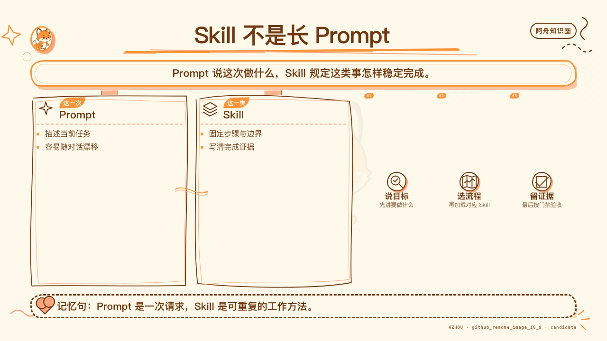
版本基准
| 项目 | 本书口径 |
|---|---|
| 上游仓库 | mattpocock/skills |
| 固定提交 | 6654f6b60cd9d5be8b54c6fafe44346dabeb3b76 |
| 固定时间 | 2026-08-24 |
| 书稿核验 | 2026-09-01 |
| Skill 数量 | 37 个：engineering 18、productivity 7、misc 4、in-progress 8 |
| 目标读者 | 刚起步、已经在用、正在设计团队级 AI 工程流程的开发者 |
| 补充证据 | Matt Pocock 官网一手材料 |
本书不是 Matt Pocock 官方文档，也不代表原作者背书。Skill 的原始代码与文档采用 MIT License；本书原创讲解、图示和案例采用 CC BY-NC-SA 4.0。
目录#
- 这本书怎样读
- Skill 到底是什么
- 先看懂仓库，再安装
- 写代码前：把模糊需求变成工程决策
- 从对话到交付：规格、拆票、实现和评审
- 反馈环：原型、TDD、诊断和研究
- 代码不会自己变好：领域语言、深模块与双轴评审
- 跨人、跨会话与人工步骤
- 七个 UI 客户端实例，从浅到深
- 把 Skills 引入自己的仓库
- 新人四周训练路线
- 37 个 Skills 逐项小白手册
- Matt Pocock 本人怎样讲 Skills
- 速查索引与资料声明
第 0 章 · 这本书怎样读#
很多传统开发同学第一次接触 Skills，会自然地把它理解成新的脚手架、插件市场，或者一组更长的 Prompt。
这三个理解都只碰到表面。
Matt Pocock 这套仓库真正有价值的地方，是把几十年软件工程里已经被反复验证的做法，压缩成 Agent 可以按条件调用的小型工作纪律。它不替你掌控整个过程，也不承诺一键完成项目。它做的事更克制：当某类失败风险出现时，把最合适的反馈环装进当前对话。
0.1 先选路径，不必顺序读完#
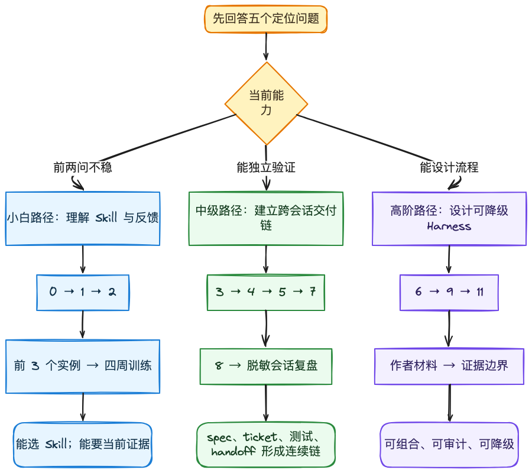
| 你现在是谁 | 先解决什么 | 建议顺序 | 读完应该能做什么 |
|---|---|---|---|
| 小白：还把 Agent 当聊天机器人 | 学会区分 Prompt、Skill、工具和项目规则 | 0 → 1 → 2 → 8 的前 3 个案例 → 10 | 选对第一个 Skill，能要求 Agent 留下验证证据 |
| 中级：已经能用 Agent 写功能 | 解决需求漂移、弱测试、疑难 bug 和跨会话失真 | 3 → 4 → 5 → 7 → 8 | 让 spec、ticket、测试和 handoff 组成连续工程链 |
| 高阶：正在带团队或建 Harness | 设计可组合、可审计、可降级的 Agent 工作流 | 6 → 9 → 11 → 12 → 13 | 把 Skill 改写成项目级流程，并用证据边界约束完成声明 |
如果你不知道自己是哪一档，用下面五个问题定位：
- 你能否说清这次任务最可能怎样失败？
- 你能否指出可重复运行的反馈命令？
- 新会话不读旧聊天，还能否继续工作？
- 你的 review 能否分开「代码是否合规」和「是否做对了需求」？
- 某个工具或子 Agent 不可用时，流程还能否保留核心约束？
前两题还回答不清，从小白路径开始；前三题稳定后转入中级；能用真实证据回答全部五题，再进入高阶路径。
0.2 按问题直达章节#
| 我现在遇到的问题 | 直接去哪里 |
|---|---|
不知道 Skill 与 Prompt、工具、AGENTS.md 有什么区别 |
第 1 章 |
| 装好后不知道怎样选 | 第 2 章和附录一页选型表 |
| Agent 还没问清就开始写 | 第 3 章 |
| 需求清楚，但一换会话就走样 | 第 4 章和第 7 章 |
| 测试很多，但 bug 总是复发 | 第 5 章 |
| 代码越生成越难改 | 第 6 章 |
| 想看从简单到复杂的完整示例 | 第 8 章 |
| 想把公开 Skill 改成自己团队的规则 | 第 9 章 |
| 想知道 Matt Pocock 本人怎样表述这套方法 | 第 12 章 |
0.3 本书采用的讲法#
每一章都按同一顺序展开：
- 先讲传统开发者最容易误判的地方。
- 再解释对应 Skill 在解决什么失败风险。
- 给一段可直接交给 Agent 的输入示例。
- 说明应该留下什么产物和验证证据。
- 最后列出常见失败与本章验收。
0.4 案例边界#
书中的 UI 客户端案例全部是匿名化、合成化场景。它们保留常见工程问题，但不携带任何可识别的私有项目事实。
可以出现的内容：
- 设置页文案与多语言资源；
- 桌面客户端的 renderer、preload、main 进程；
- 通用 Provider 配置与公共接口；
- 定时任务面板、错误状态与重试；
- 测试、类型检查、构建和评审结果。
不会出现的内容：
- 私有项目名、内部仓库地址和用户本机路径；
- 未公开模块名、协议名、接口、事件或源代码；
- 能反推出产品路线、客户、账号、密钥或发布状态的细节。
0.5 证据口径#
本书把证据分成三层：
| 层级 | 能证明什么 | 不能证明什么 |
|---|---|---|
| 上游固定提交 | Skill 在该提交里的真实文本和结构 | 后续版本仍然相同 |
| 官网作者表述 | Matt Pocock 在检索日当时公开怎样讲这套方法 | 这些表述已经出现在固定提交中，或他为本书背书 |
| 当前验证 | 当前代码、当前分支、当前命令的结果 | 下一次改动仍然会通过 |
历史成功不等于当前通过。一个旧会话里跑绿的测试，不能为今天的分支背书。
0.6 本章验收#
- 能说清本书主角是公开的 Matt Pocock Skills 仓库。
- 能说清匿名实例是教学载体，不是私有项目案例披露。
- 能区分固定上游事实、后续官网表述和当前验证。
- 能根据自己的经验选择小白、中级或高阶路径。
第 1 章 · Skill 到底是什么#
1.1 Skill 不是更长的 Prompt#
普通 Prompt 往往只描述一次任务：改一个页面、修一个 bug、写一段测试。
Skill 描述的是可重复使用的工作方法：
- 什么情况下应该触发；
- 开始前需要读什么；
- 按什么顺序行动；
- 哪些步骤不能跳过；
- 完成时必须留下什么证据；
- 哪些情况应该停下来，把决定交还给人。
可以把它理解成 Agent 的标准作业程序，但它比传统 SOP 更贴近上下文：Agent 会结合当前仓库、对话和工具，把方法落到具体任务上。
1.2 一个最小 Skill 的四个问题#
无论 Skill 文件多长，都应该回答四个问题：
| 问题 | 例子 |
|---|---|
| 什么时候触发 | 用户报告难复现的性能退化 |
| 第一步做什么 | 先建立能捕获该症状的红色反馈环 |
| 中间怎样约束 | 每次只改变一个变量，假设必须可证伪 |
| 怎样才算完成 | 回归测试变绿，临时埋点被清理，当前命令重新运行 |
如果一份所谓 Skill 只写了角色、语气和宏大目标，却没有可判断的完成条件，它更接近人格 Prompt，不是可靠的工程能力。
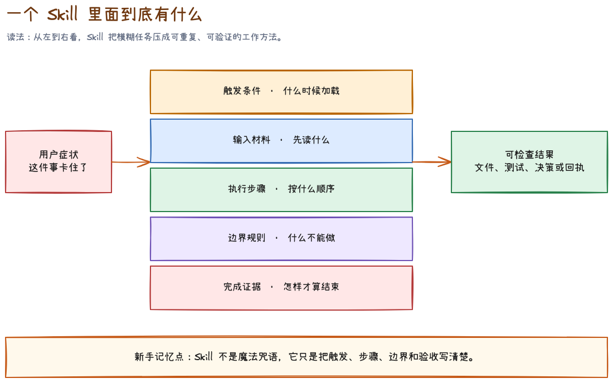
对刚接触 Skill 的同学，更实用的读法是把一个 SKILL.md 拆成五层：
- 触发层：frontmatter 里的
description以及正文开头，决定它在什么症状下应该被加载。 - 输入层：开始前必须读取的文件、当前对话、issue、spec、测试命令或外部资料。
- 步骤层：Agent 必须按什么顺序做事，哪些步骤可以并行，哪些步骤必须等待前置决定。
- 边界层：禁止事项、权限边界、隐私要求、工具缺失时的降级方式。
- 证据层：什么文件、命令结果、决策或回执出现后，才能说这次运行结束。
一个 Skill 文件夹里还可能有 references/、scripts/、模板或示例。它们不是装饰。SKILL.md 应该保留主路径，把只有某个分支才需要的材料放到引用文件里。这叫渐进披露：先让 Agent 看见“何时需要什么”，再按条件读取细节，避免每次对话都背着整个手册。
frontmatter 小白词典#
| 字段 | 可以怎么理解 | 新手要检查什么 |
|---|---|---|
name |
Skill 的稳定名字 | 文件夹名、调用名和文档是否一致 |
description |
路由标签 | 是否同时写清能力与触发场景，而不是只写“很有用” |
argument-hint |
用户输入提示 | 是否告诉用户需要补什么上下文 |
disable-model-invocation: true |
只允许用户显式发起 | 是否适合会改变流程、创建大量产物或需要用户持续参与的能力 |
disable-model-invocation 不是能力等级。它只是控制“谁有权启动”。例如 grill-me 会进入多轮访谈，应该由用户明确发起；tdd 是实现内部的工程纪律，可以由 Agent 在合适场景主动加载。
1.3 小而可组合，比接管全流程更重要#
上游 README 明确反对让一套方法论完全接管流程。原因很现实：流程越大，内部错误越难定位，使用者也越难保留控制权。
这套仓库选择了另一条路：
grill-me只负责把想法问清楚；to-spec只负责把已经确定的对话写成规格；to-tickets只负责把规格拆成有阻塞关系的垂直切片；implement只负责按已经批准的规格施工；code-review只负责按 Standards 与 Spec 两条轴验收。
每个 Skill 都有边界。边界清楚以后，组合才不会变成一团自动化黑箱。
1.4 两种调用方式#
这个仓库按一个关键轴区分 Skills：谁可以调用它。
| 类型 | 谁触发 | 典型职责 | 例子 |
|---|---|---|---|
| User-invoked | 用户显式输入 | 编排一次完整工作阶段 | grill-me、to-spec、implement |
| Model-invoked | 用户或 Agent 按任务匹配 | 提供可复用的工程纪律 | tdd、diagnosing-bugs、codebase-design |
这条区分解决了一个常见问题：如果 Agent 可以自动启动任何大型流程，它很容易在用户只想问一句话时开一场漫长仪式。让编排型 Skill 由用户显式触发，能保留控制权；把 TDD、诊断、领域建模这类纪律交给模型按需调用，又能减少重复指挥。
1.5 从失败风险反推 Skill#
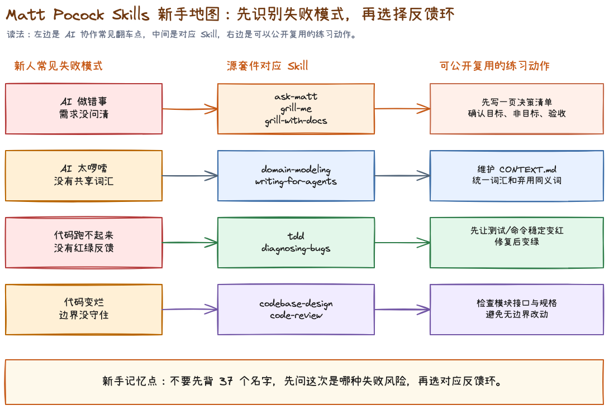
不要先背 37 个名字。先问这次最可能怎样失败。
| 失败风险 | 优先考虑 |
|---|---|
| 做出的东西不是用户想要的 | ask-matt、grill-me、grill-with-docs |
| 团队和 Agent 对词汇理解不同 | domain-modeling、writing-for-agents |
| 代码看似完成但无法稳定验证 | tdd、diagnosing-bugs |
| 功能越做越难改 | codebase-design、improve-codebase-architecture |
| 代码规范但做错了需求 | code-review 的 Spec 轴 |
| 需求明确但跨会话失真 | to-spec、to-tickets、handoff |
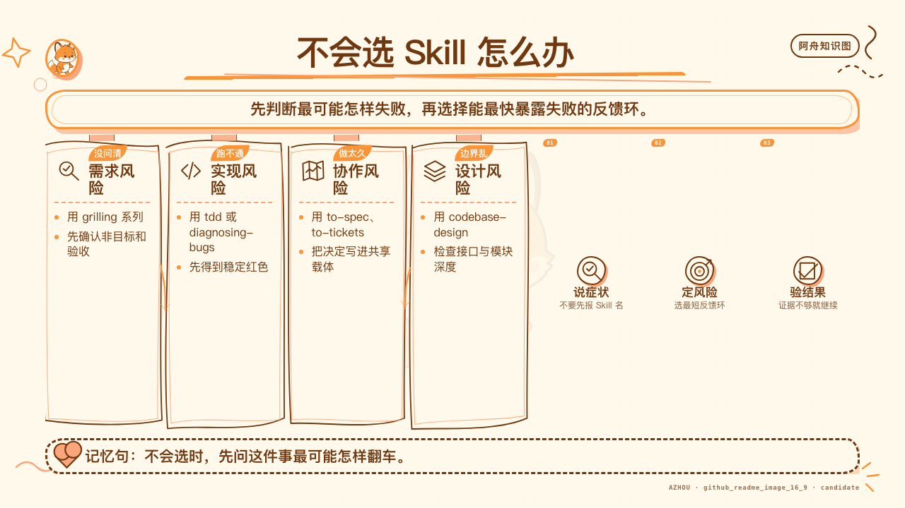
1.6 本章验收#
- 能用自己的话解释 Skill 与一次性 Prompt 的区别。
- 能区分 user-invoked 与 model-invoked。
- 面对任务时先判断失败风险，而不是先选最强、最长的流程。
第 2 章 · 先看懂仓库，再安装#
2.1 四个目录，不是同一种稳定性#
固定提交中共有 37 个 SKILL.md：
| 目录 | 数量 | 定位 | 使用态度 |
|---|---|---|---|
engineering |
18 | 日常软件工程主线 | 重点学习 |
productivity |
7 | 通用思考、交接、教学与文档 | 按场景组合 |
misc |
4 | 作者特定工具与仓库设置 | 先判断是否匹配本项目 |
in-progress |
8 | 正在演化的实验能力 | 只做试验，不当稳定接口 |
一个容易踩的坑，是看到目录里存在 Skill，就默认它已经稳定。in-progress 的名字、行为和存在性都可能变化，书中会完整列出，但不会把它们塞进新人主链。
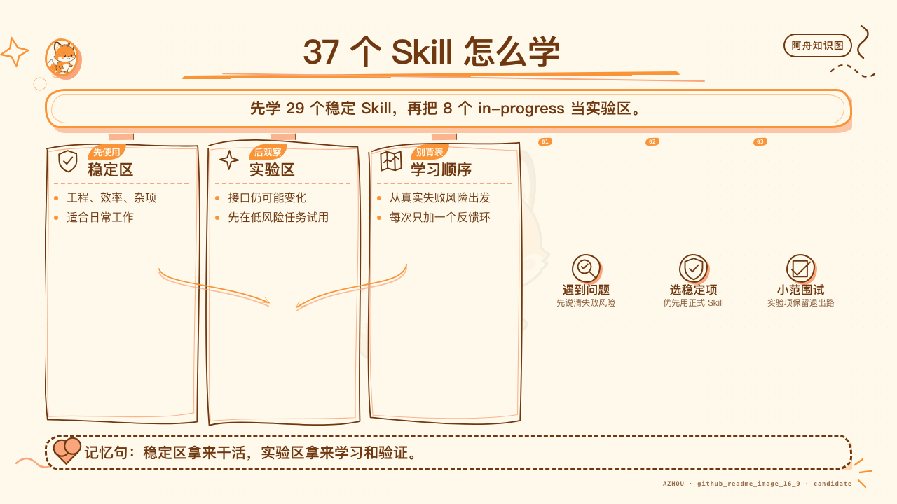
2.2 两种安装哲学#
上游提供两条主要路径：
Claude Code 插件#
claude plugins install mattpocock-skills
它安装整个托管、只读的集合。优点是更新方便，代价是你订阅的是上游版本，不是项目自己的改编版。
skills.sh 安装#
npx skills@latest add mattpocock/skills
它把选中的 Skill 复制到项目里。优点是可以修改、审查和版本化，代价是更新需要自己管理。
不要同时走两条路径。重复安装会让同名 Skill 出现两份，触发和维护都会变得模糊。
2.3 第一次必须做 setup#
安装后，优先运行：
/setup-matt-pocock-skills
它会配置三件事：
- issue tracker 在哪里；
- triage 使用哪些标签；
- 领域文档放在哪里。
这一步的价值不在生成几个文件，而在把 Skill 与仓库现实连接起来。没有 tracker 配置，to-spec 和 to-tickets 不知道往哪里发布；没有领域文档位置，domain-modeling 和下游任务就没有共同语言。
2.4 ask-matt 是路由器#
刚开始不需要记住全部 Skill。可以把任务原样交给 ask-matt：
/ask-matt
我要给桌面客户端新增一个 Provider 设置页。
产品方向大致确定，但错误状态、凭据保存方式和测试边界还没想清楚。
这项工作可能跨多个会话，我应该走哪条流程？
一个合理的路由不是直接回答「用 implement」，而是根据未决问题推荐：先 grill-with-docs，必要时做 prototype，决策稳定后 to-spec，再根据规模决定是否 to-tickets。
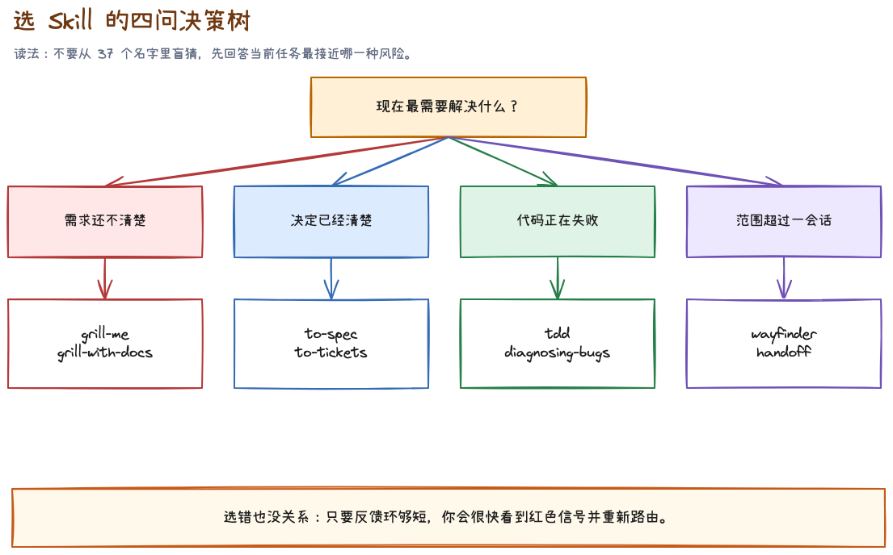
2.5 三档使用强度#
| 任务规模 | 推荐链路 | 不该做的事 |
|---|---|---|
| 小改动 | 直接实现，按需调用 tdd 或 code-review |
为改一个字写十页规格 |
| 中等功能 | grill-with-docs → to-spec → implement |
边写边重新设计 |
| 大型工作 | wayfinder → 决策 tickets → to-spec → to-tickets → 多次 implement |
试图把所有上下文塞进一个会话 |
2.6 本章验收#
- 能说出四个目录的稳定性差异。
- 知道 Claude Code 插件与 skills.sh 不应重复安装。
- 能解释 setup 为什么是仓库级配置，不是形式步骤。
- 遇到选型困难时先用
ask-matt，而不是盲猜。
第 3 章 · 写代码前：把模糊需求变成工程决策#
3.1 grill-me：答案在你脑子里#
grill-me 适合不依赖代码库的想法。它会把主题建模成一棵决策树，逐轮询问当前已经可以回答的前沿问题。
适合：
- 产品方向；
- 功能范围；
- 交互取舍；
- 团队流程；
- 文章或课程结构。
不适合：
- 答案在代码或官方文档里，却让用户凭记忆回答；
- 已经做完决定，只需要整理成规格；
- 用户只想听一个简短解释。
示例输入：
/grill-me
我想做一个定时任务推荐面板。
用户可以看到推荐理由、下一次运行时间和启用状态，
但我还没决定它应该和现有任务列表放在一起还是分开。
好的结果不是 Agent 替你设计完页面，而是未决树被逐步清空：目标用户是谁、首屏最重要的信息是什么、推荐如何被采纳、失败状态怎样表达、哪些内容明确不做。
3.2 grilling：底层提问原语#
grilling 是 grill-me、grill-with-docs、wayfinder 等 Skill 背后的提问纪律。
它有两条重要规则：
- 环境和代码里能查到的事实，由 Agent 自己查；
- 产品取舍、风险偏好和业务决策，必须由人决定。
如果 Agent 问「仓库用什么测试框架」，它是在把事实调查甩给你；如果 Agent 擅自决定「失败任务自动重试三次」，它是在替你做业务决定。两者都越界。
3.3 grill-with-docs：边问边沉淀共同语言#
当问题发生在真实代码库里，优先使用 grill-with-docs。它不只提问，还会在决定形成时更新：
CONTEXT.md中的领域术语；docs/adr/中少量真正值得长期保存的架构决策。
这里的关键是 inline：术语一旦定下来就立即写，不要等会话结束再凭记忆补。
一个通用 UI 场景#
团队里有人说「保存 Provider」，有人说「连接账号」，有人说「启用模型」。这三个动作可能完全不同：
- 保存配置只写本地状态；
- 连接账号需要验证凭据；
- 启用模型会改变运行时选择。
如果这些词没有先分清，组件名、函数名、测试名和产品文案都会互相污染。domain-modeling 会要求把词压到可以用边界案例检验的程度。
3.4 ADR 不是开发日记#
只有同时满足三条，才值得写 ADR：
- 决定难以逆转；
- 没有上下文会让未来读者惊讶；
- 存在真实取舍。
「按钮放右边」通常不值得 ADR。「凭据只通过系统安全存储访问，renderer 永远拿不到明文」可能值得，因为它跨越安全边界，未来也容易被误改。
3.5 决策已经完成时，不要继续 grill#
如果目标、边界、用户故事和测试接缝都已经确定，再开一轮拷问只会制造重复讨论。这时应该进入 to-spec。
选择口诀：
| 当前状态 | 下一步 |
|---|---|
| 想法模糊，答案在自己脑子里 | grill-me |
| 想法模糊，且需要读仓库和维护术语 | grill-with-docs |
| 决策已完成，需要形成可交付文档 | to-spec |
| 一个会话容纳不了全部决策 | wayfinder |
3.6 本章验收#
- 不会让 Agent 问可以从仓库查到的事实。
- 不会让 Agent 替人做业务取舍。
CONTEXT.md只保存术语，不膨胀成规格书。- ADR 只记录高成本、反直觉、存在取舍的决定。
第 4 章 · 从对话到交付：规格、拆票、实现和评审#
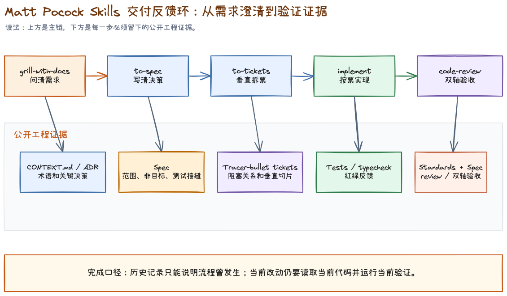
4.1 to-spec：记录已经做完的决定#
to-spec 不负责采访。它应该读取当前对话，把已经确定的内容整理成：
- Problem Statement；
- Solution；
- 编号 User Stories；
- Implementation Decisions；
- Testing Decisions；
- Out of Scope；
- Further Notes。
它在写规格前会确认测试接缝。上游强调优先复用已有接缝，尽量选择最高层、最少数量的公共边界。理想接缝数量甚至可以是一条。
为什么规格里要写测试接缝？因为没有这一步，下一会话很可能把内部函数当接口测试，或者为了好测而到处切新接口，最后测试很多，设计更差。
4.2 to-tickets：按垂直切片拆，不按技术层拆#
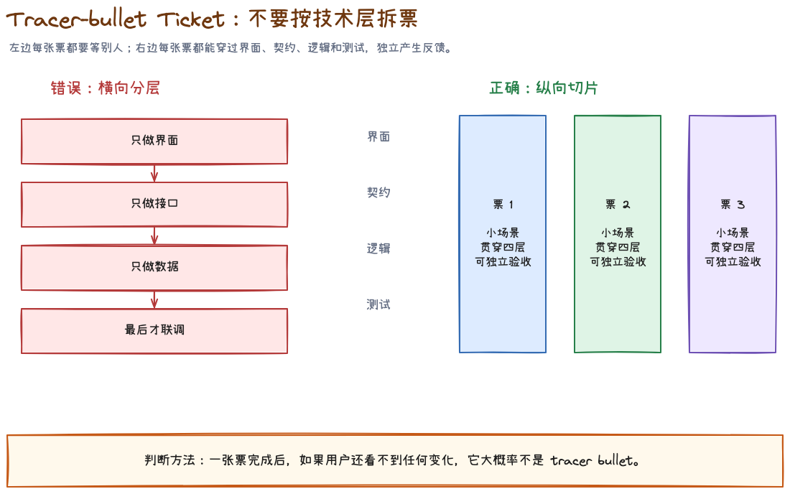
错误拆法：
- 先完成所有数据结构；
- 再完成所有 main 进程逻辑；
- 再完成所有 renderer 页面；
- 最后统一补测试。
这种横向拆法的问题是，前三张票关闭时都没有可演示的用户价值，也没有端到端反馈。
更好的 tracer-bullet 拆法：
- 用户可以新增一条最小 Provider 配置，并在重启后看到它；
- 用户可以验证凭据，看到成功与失败状态；
- 用户可以设为默认，并在一次真实请求里使用；
- 用户可以删除配置，运行时安全回退。
每张票都穿过必要层级，但只做一条细而完整的行为。
4.3 宽范围机械改动是例外#
如果一次共享类型重命名会让几千个调用点同时变红，硬拆垂直切片并不现实。to-tickets 对这类 wide refactor 推荐 expand–migrate–contract：
- Expand：新旧形式并存，保持兼容；
- Migrate：按包或目录分批迁移；
- Contract：确认旧调用归零后删除旧形式。
这个例外很重要。方法论不是教条，垂直切片的目的始终是让反馈保持有效。
4.4 implement：施工阶段不重开产品讨论#
implement 接收已经批准的 spec 或 tickets。它应该：
- 按预先约定的 seam 使用
tdd； - 一次实现一张 ticket；
- 持续运行类型检查和目标测试；
- 完成后调用
code-review； - 在当前分支提交结果。
它不应该边实现边 redesign。出现新的产品决策时，应停下来上报，而不是悄悄选一个答案继续写。
4.5 code-review：规范正确与需求正确是两件事#
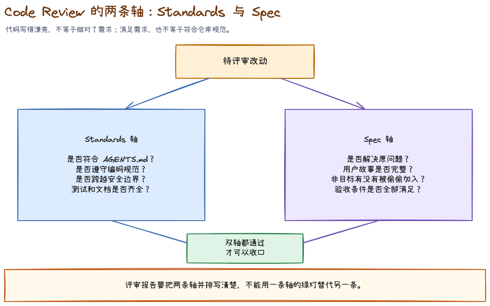
这套 code-review 把评审拆成两条隔离的轴：
| 轴 | 核心问题 | 证据 |
|---|---|---|
| Standards | 代码是否遵守仓库规范与坏味道基线 | 编码规范、diff、测试与设计信号 |
| Spec | 代码是否实现了原始需求 | issue/spec、验收标准、行为证据 |
一段代码完全可能写得优雅，却解决了错误的问题；也可能功能正确，却以高耦合和重复代码实现。两条轴不能揉成一个模糊的总分。
4.6 wayfinder：一个会话装不下时，先画决策地图#
大工程的瓶颈通常不是代码量，而是未决问题太多。wayfinder 会建立一张由决策 tickets 组成的地图：
- grilling ticket：通过讨论决定；
- prototype ticket：必须做出可交互东西才能决定；
- research ticket：需要一手资料；
- task ticket：需要人完成外部动作。
地图清空以后，再用 to-spec 把散落的决定收拢成统一规格。它不是直接把地图变成实现票。
4.7 本章验收#
- 规格只记录已确定内容，不在写作阶段偷偷补产品决定。
- tickets 默认是 tracer-bullet 垂直切片。
- wide refactor 用 expand–migrate–contract，而不是强行端到端。
- 实现阶段遇到新决策会回报，不会自行 redesign。
- 评审同时覆盖 Standards 与 Spec，但不混成一个结论。
第 5 章 · 反馈环：原型、TDD、诊断和研究#
5.1 prototype：写代码只是为了回答问题#
原型不是简陋版产品。它的验收标准不是代码质量，而是有没有回答那个设计问题。
上游区分两类：
| 问题 | 产物 |
|---|---|
| 状态模型或逻辑是否合理 | 可双击打开的单文件 HTML |
| UI 结构应该选哪种 | 同一路由下多个结构明显不同的变体 |
原型通常不需要生产级错误处理、抽象和测试。加这些东西不会增加学习，反而拖慢反馈。
原型要非常容易启动。一个逻辑 demo 双击即可打开；一个 UI 原型只需要一条项目任务命令。
5.2 tdd：红到绿，不是先写一堆测试#
这套 TDD 的循环非常窄：
- 在预先同意的公共 seam 写一个失败测试；
- 运行它，确认因为目标行为缺失而变红；
- 只写足够让这个测试变绿的实现；
- 再进入下一个行为。
它明确反对三类测试：
- 实现耦合：测试私有方法或 mock 内部协作者；
- 同义反复：测试用和实现一样的算法计算期望值；
- 横向批量：先写完所有测试，再一次性实现。
Mock 只应该放在系统边界，例如外部 API、时钟、随机数。不要 mock 自己的模块来制造假绿。
上游当前版本把 refactor 从红绿循环中移出，交给 review 阶段。这一点和经典 Red-Green-Refactor 口号不同，使用时要以固定提交里的真实 Skill 文本为准。
5.3 diagnosing-bugs：没有红色命令，不进入理论阶段#
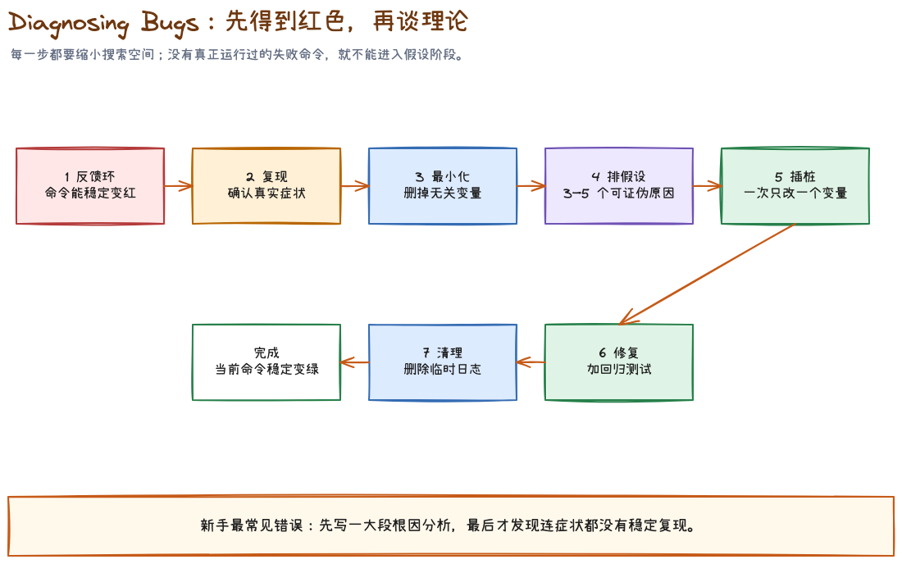
这是仓库里最鲜明的纪律之一。
面对疑难 bug，很多 Agent 会先读代码，十分钟后列出一个听起来合理的根因。diagnosing-bugs 强行把顺序反过来：先找到一条能够捕获用户精确症状的命令。
反馈环可以是：
- failing test；
- curl 脚本；
- CLI + 固定输入；
- 无头浏览器；
- 捕获并重放请求或事件；
- throwaway harness；
git bisect run；- 最后才是结构化的人机协作脚本。
进入下一阶段前，这条命令必须已经实际运行过，并且具备 red-capable：它能因为这个具体 bug 失败，而不是只证明程序没有崩溃。
之后的顺序是：
- Reproduce + minimise；
- 生成 3–5 个排序后的可证伪假设；
- 每次只改变一个变量进行 instrument；
- 修复并把最小复现固化成回归测试；
- 清理临时日志和辅助代码。
5.4 隐私与调试证据#
诊断 Skill 会展示命令、输出和捕获产物，因此先脱敏是硬要求：
- secret 替换为
<REDACTED>； - 凭据留在环境变量；
- 只引用携带信号的日志行；
- HAR、trace、截图在提交前检查认证头与个人数据。
5.5 research：外部事实卡住决定时，用一手来源#
当问题不在仓库，而在第三方 SDK、协议、版本声明或官方 API 时，应该进入 research：
- 只用官方文档、规范、源码、官方 API 等高可信一手来源；
- 每个材料性论断附链接；
- 产出 Markdown 调研文件；
- 明确核验日期、版本和未知项。
调研文件容易过期。是否长期保留，应看它是不是规格或 ADR 的长期依赖；不是的话，短期证据比陈旧常驻文档更安全。
5.6 本章验收#
- 原型只有一个明确问题，并且启动成本极低。
- TDD 测公共 seam，不测内部实现。
- 疑难 bug 在形成理论前已经存在 red-capable 命令。
- 调试证据完成脱敏。
- 外部技术事实优先查一手来源，并标注版本与日期。
第 6 章 · 代码不会自己变好：领域语言、深模块与双轴评审#
6.1 domain-modeling：共同语言不是术语装饰#
领域语言会直接影响：
- 用户和 Agent 是否在讨论同一件事；
- 文件、变量和函数是否使用一致名称；
- 搜索是否能快速命中；
- 测试描述是否表达真实行为；
- spec 和代码之间是否存在翻译损耗。
CONTEXT.md 应该像词典：每个词一两句话，必要时记录废弃同义词。它不保存实现细节，不承担规格书、scratchpad 或会议纪要的职责。
6.2 codebase-design：深模块的共享词汇#
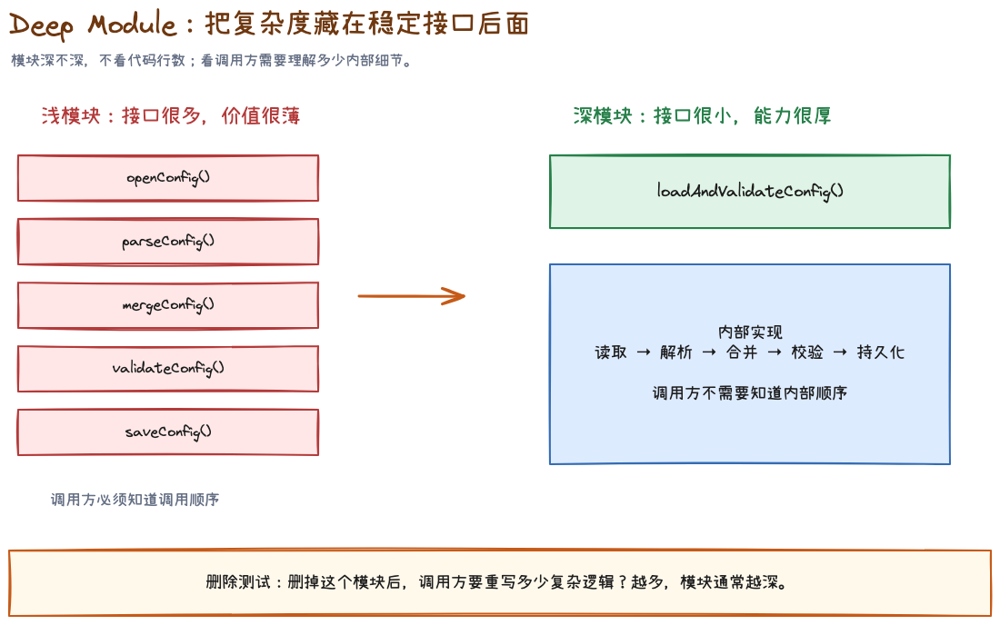
这个 Skill 更像设计词典，不是直接执行的流程。它建立一组精确术语：
- module；
- interface；
- depth；
- seam；
- adapter；
- leverage；
- locality。
核心判断是深度：一个好模块用小接口隐藏大量复杂行为。
删除测试#
想象删掉这个模块：
- 如果复杂度也一起消失，它可能只是无价值的传话筒；
- 如果复杂度散落到许多调用方，它确实在集中管理复杂性。
一个适配器不一定构成真实 seam#
只有一个实现时，抽象可能只是预测未来。出现两个需要变化的适配器，才说明 seam 真正存在。不要为了可替换性口号提前造接口。
6.3 improve-codebase-architecture：先做候选调查，不直接大改#
这个流程会：
- 读取
CONTEXT.md和相关 ADR； - 寻找浅模块、泄漏 seam、重复知识和难测试区域；
- 生成可视化 HTML 候选报告；
- 让用户选择一个候选；
- 再用
grilling探索如何加深模块。
它不会在报告阶段直接设计新接口，也不会把每个理论重构都列出来。架构改进必须由当前真实摩擦推动。
6.4 code-review：坏味道与规格偏差都要能指向证据#
好的 review finding 应该包含：
- 严重级别；
- 具体文件和位置；
- 可触发的支持输入或使用路径；
- 为什么违反标准或规格；
- 最小修复方向；
- 缺少什么测试。
「代码可以更优雅」不是 finding。「删除 Provider 后默认选择仍指向不存在的 id，下一次启动会进入不可恢复状态」才是可行动问题。
6.5 resolving-merge-conflicts：解决意图，不是选择文本#
冲突两侧都可能是正确改动。处理每个 hunk 前应该读取：
- 对应 commit 信息；
- PR 或 issue；
- 两边的测试与文档；
- 当前 merge/rebase 的目标。
禁止整批使用 --ours 或 --theirs。那只能保证语法上快速消除标记，不能保证任何一侧的意图被保留。
冲突解决完成后，要继续完成 merge/rebase，并运行项目的类型检查、测试和格式化。冲突消失不等于合并正确。
6.6 本章验收#
CONTEXT.md保持词典边界。- 能用 module、interface、depth、seam 等精确词讨论设计。
- 只有真实摩擦才进入架构候选，不做理论重构。
- review finding 能指向具体行为和证据。
- merge conflict 按两侧意图解决，不整批选边。
第 7 章 · 跨人、跨会话与人工步骤#
7.1 handoff：工作真的需要旅行时再用#
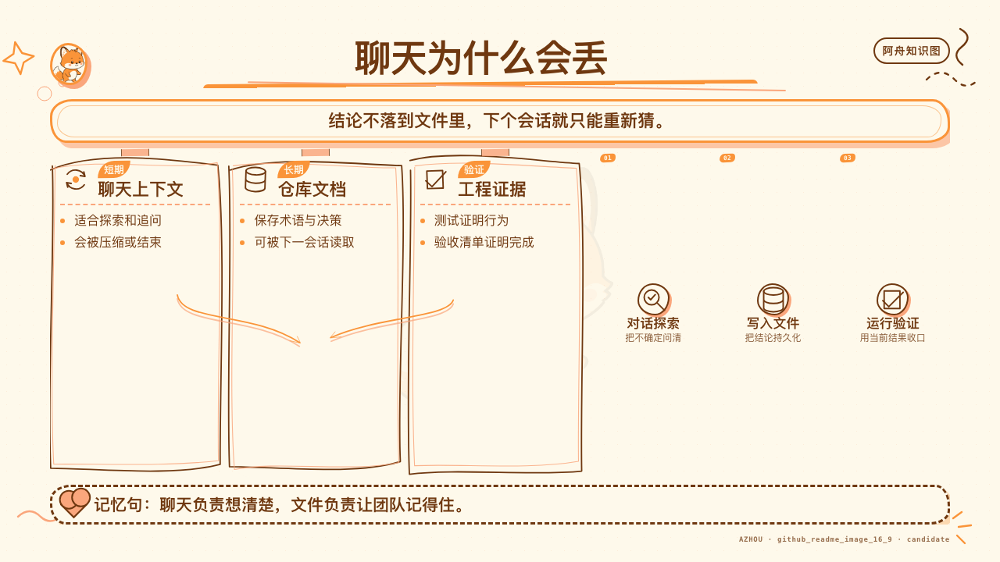
handoff 把当前对话压缩成临时目录中的交接文档，供新 Agent 或新工具接手。
它只保留活着的线索：
- 当前目标；
- 已做决定；
- 未完成步骤；
- 关键路径；
- 已有文档和 commit 的指针；
- 风险与阻塞。
已经存在于 spec、ADR、ticket 或 commit 里的内容只留路径，不整段复制。密钥必须脱敏。
如果只是继续当前对话，不需要 handoff；如果全部方向作废，应该清空上下文；如果只是一个独立子问题，应该用子 Agent。不要把 handoff 当日常总结模板。
7.2 to-questionnaire：答案在别人脑子里#
有些决定不能靠 Agent 查，也不在你脑子里。例如：
- 客户愿意接受什么迁移窗口；
- 法务对数据保留有什么要求；
- 领域专家怎样定义异常状态；
- 运维团队能提供什么部署权限。
to-questionnaire 会先问清收件人和你需要拿回的决定，再生成按重要性排序的 Markdown 问卷。每题只问一件事，允许回答不知道，并以「还有什么我们应该问但没问」收尾。
7.3 wizard：只把人才能做的步骤交给人#
当流程卡在第三方控制台、凭据、CI secret、一次性迁移或 cutover 时，wizard 生成交互式 Bash 脚本引导人完成。
安全边界很关键：Agent 只写脚本，不运行脚本。这样 secret 不会进入 Agent 上下文。脚本可以：
- 打开官方页面；
- 指示点击位置；
- 以不回显方式读取 token；
- 写入
.env或 secret store； - 支持中断后重跑。
普通文件编辑、测试运行和本地配置如果 Agent 自己能做，不应该伪装成人工步骤推给用户。
7.4 teach：文件夹才是跨会话记忆#
teach 把一个目录变成长期教学工作区：
MISSION.md记录为什么学；RESOURCES.md保存高可信资料；lessons/保存每节 HTML 课程；reference/保存真正会反复查的速查材料；learning-records/决定下一节教什么。
它区分阅读时的流畅感与长期存储强度，通过检索练习、间隔和交错来建立后者。课程内容不应该只依赖模型记忆，而要被可信资料和引用约束。
7.5 wait-what：理解断线时，让 Agent 退回前提#
这个 Skill 很短，但用途明确：上一条消息没讲明白时，要求 Agent 用缺失上下文、项目词汇和更直白的例子重讲。
它不是「再简短一点」。有时越短越难懂。它表达的是读者在某个前提处掉线，需要重建桥梁。
7.6 writing-for-agents：精确比解释更重要#
写给 Agent 的文档有两个负担：
| 负担 | 含义 | 常见问题 |
|---|---|---|
| Context load | 每轮都常驻上下文的 token 与注意力成本 | AGENTS.md 越写越长 |
| Cognitive load | 人需要记住在哪里找什么 | 指针太少，规则散落无人知道 |
解决办法不是把所有内容塞进根文档，而是建立锋利的 context pointer：一行说明资料是什么、什么时候必须读取。
它还强调 leading words 和 no-op 测试：如果删掉一句话，模型行为不会变化，那句话就是负担；如果一个紧凑术语可以稳定唤起完整做法，就用术语替代反复解释。
7.7 本章验收#
- 只有跨会话或跨工具时才 handoff。
- 答案在别人脑子里时使用 questionnaire，而不是让 Agent 猜。
- secret 由人工向导安全收集，不进入聊天上下文。
- 长期教学依赖工作区文件，不依赖模型自称记得。
- Agent 文档使用精确指针，并定期删除 no-op 指令。
第 8 章 · 七个 UI 客户端实例，从浅到深#
以下案例使用一个匿名桌面 AI 客户端作为教学背景。它有 renderer、preload、main 进程，支持多语言、Provider 配置和定时任务。所有名字、数据和代码均为公开可复现的合成示例。
实例一：设置页改一个文案#
任务#
把设置页按钮从「保存」改成「保存并验证」，所有语言保持一致。
传统开发的自然反应#
全文搜索中文，找到 JSX，直接改字。
AI 协作里的风险#
- 文案可能来自 i18n key，不在组件里；
- 不同 locale 可能漏改；
- 按钮行为没有验证逻辑，文案会承诺不存在的能力；
- 测试可能只断言旧 key。
Skill 选择#
这是小改动，不需要完整规格链。先确认需求真实含义，必要时用 ask-matt；实现时使用项目既有验证，不启动 wayfinder。
推荐输入#
请先定位按钮文案来源和现有点击行为。
确认“保存并验证”是否已经有对应验证动作；如果没有，停止并说明这是功能变化，不是纯文案变化。
如果行为已经存在，只修改语义 key 和所有 locale，并运行最小 i18n 检查。
应留下的证据#
- 被修改的语义 key；
- locale 完整性检查；
- 目标组件或交互测试；
- 没有新增硬编码用户文本的扫描结果。
验收#
- 文案与真实行为一致；
- 所有受支持语言均有值；
- 当前检查重新运行，而不是引用旧日志。
实例二：先做定时任务推荐面板原型#
任务#
团队还没决定推荐项应该和现有任务列表并排，还是单独放在顶部。
错误做法#
直接进入产品代码，接真实任务数据，补状态管理和错误处理，然后让产品在接近完成时选布局。
Skill 选择#
问题是「哪种结构更容易理解」，不是「怎样写生产代码」。使用 prototype。
原型问题#
我们只需要回答一个问题：
推荐任务与现有任务，是并排比较更清楚，还是先处理推荐再进入列表更清楚？
请在同一路由提供三个结构明显不同的变体：
1. 左右双栏；
2. 顶部推荐带 + 下方任务表；
3. 统一列表，用来源标签区分。
使用固定假数据，不接真实 API，不进入生产状态管理。
应留下的证据#
- 一条启动命令；
- 三个结构差异足够大的变体；
- 评审人选择与理由；
- 被淘汰方案的关键失败点；
- 一条可以写进 spec 的明确决定。
验收#
原型回答了结构问题就结束。不要因为代码看起来能用，就直接合并到主分支。
实例三：推理强度保存后被重置#
症状#
用户把某个 Provider 的推理强度设为 high，界面当下显示正确；重启客户端后恢复为 medium。
错误做法#
先搜索 reasoning，看到一个默认值，就把 medium 改成 high。
Skill 选择#
使用 diagnosing-bugs。这类问题可能发生在 renderer state、IPC payload、main 持久化、schema 默认值或反序列化任一环节。没有反馈环时，任何理论都只是猜。
建立 red-capable 命令#
目标症状：通过公共设置接口保存 high，重建应用状态后读取，得到 medium。
先写一条最小集成测试，只穿过公开设置接口：
1. 创建临时配置目录；
2. 保存 reasoningEffort=high；
3. 销毁并重新创建配置服务；
4. 读取同一 Provider；
5. 断言仍为 high。
运行目标测试，确认当前实现因实际症状失败后，再列假设。
排序假设示例#
- 写入 schema 未包含该字段，因此序列化时丢失；
- IPC contract 接收字段，但 main 侧映射遗漏；
- 读取 schema 把合法 high 误判为未知值并回退；
- renderer 重启后读取了另一份配置作用域。
每个假设都要有预测。例如假设 1 的预测是：磁盘文件中不存在 reasoningEffort，但 IPC 请求载荷存在。
验收#
- 目标命令先红后绿；
- 最小复现成为回归测试；
- 一次只验证一个假设；
- 临时日志全部清理；
- 不把默认值修改伪装成持久化修复。
实例四：新增一个 Provider 垂直切片#
任务#
新增一个需要 API key 的 Provider，用户可以保存、验证、设为默认并删除。
为什么不能直接 implement#
至少有这些未决问题：
- key 存在哪里；
- renderer 是否能读取明文；
- 验证失败有哪些可区分状态；
- 删除默认 Provider 后怎样回退；
- 离线时能否保存但暂不验证；
- 测试 seam 是设置服务、IPC contract 还是端到端 UI。
Skill 链#
grill-with-docs
→ 必要时 prototype
→ to-spec
→ to-tickets
→ implement（一张票一个会话）
→ code-review
规格中的关键内容#
## User Stories
1. As a user, I can save a Provider credential without exposing its plaintext to the renderer.
2. As a user, I can verify the credential and see distinct invalid, offline, and server-error states.
3. As a user, I can make a verified Provider the default.
4. As a user, deleting the default Provider selects a valid fallback or returns to an unconfigured state.
## Testing Decisions
- Primary seam: public Provider settings service.
- Contract coverage: typed request/response schema.
- UI coverage: one happy path and three user-visible failure states.
## Out of Scope
- Provider-specific billing UI.
- Automatic key rotation.
- Import from other clients.
Tracer-bullet tickets#
- 保存最小配置并在重启后读取；
- 验证凭据并显示区分后的结果；
- 设为默认并用于一次请求；
- 删除默认项并安全回退。
每张票都包含一个用户可观察行为，不按 renderer/main/test 横向拆。
验收#
- 规格中有明确 seam 与 out-of-scope；
- 每张票都可单独演示；
- secret 不进入日志、截图和聊天；
- Standards 与 Spec 两条 review 轴分别给出结论。
实例五：把配置模块做深#
症状#
新增任何 Provider 都要同时修改六个文件：默认值、序列化、验证、UI 映射、删除回退和测试 fixture。调用方知道过多内部规则。
Skill 选择#
先用 improve-codebase-architecture 形成候选，不直接重构。讨论时使用 codebase-design 的精确词汇。
候选描述#
当前配置 module 很浅：
它的 interface 暴露存储格式、默认值选择和删除回退，
调用方需要重复维护同一组不变量。
候选方向：
把 Provider 生命周期规则放进一个更深的 module，
对外只暴露 register、verify、selectDefault、remove 四个行为。
必须回答的问题#
- 复杂度是否真的会集中，还是只是换一层包装；
- 删除该模块后，复杂度会不会重新散到调用方；
- 当前是否存在两个真实适配器，足以证明 seam；
- 测试能否只通过 interface 观察行为；
- 迁移是否需要 expand–migrate–contract。
验收#
- 重构由实际霰弹式修改证据驱动；
- interface 比实现显著更小；
- 不新增纯转发 wrapper；
- 行为测试在重构前后保持；
- 相关 ADR 若存在，明确说明是否冲突。
实例六：合并两条都正确的分支#
冲突#
分支 A 把 providerId 重命名为 connectionId，因为领域语言发生变化；分支 B 在旧字段上增加了删除默认项后的回退验证。
错误做法#
整批选 --ours 保留重命名，或整批选 --theirs 保留验证。
Skill 选择#
使用 resolving-merge-conflicts，逐 hunk 读取两边意图。
意图合并#
正确结果通常是：保留新领域词 connectionId，同时把 B 的回退验证迁移到新字段和新接口上。文本上不是任何一侧原样，但意图上保留了两侧价值。
验收#
- 每个 hunk 都能说明两侧原始意图；
- 没有批量 ours/theirs；
- merge/rebase 完成到终态；
- 类型检查、目标测试和格式化在合并后重新运行。
实例七：需要人工配置第三方密钥#
任务#
代码已经支持 Provider，但需要团队管理员去第三方控制台创建 key，并写入 CI secret。
错误做法#
让管理员把 key 粘贴到聊天里，Agent 再执行命令。
Skill 选择#
使用 wizard 生成交互式 Bash 脚本；Agent 不运行它。
向导应该做什么#
- 打开官方控制台链接；
- 提示管理员创建最小权限 key；
- 使用无回显输入读取 key；
- 写入本地
.env或 CI secret； - 运行不暴露凭据的连通性检查；
- 支持中断后重新开始。
验收#
- secret 从未进入聊天、日志和 shell history；
- 人只处理必须由人完成的外部步骤；
- 连通性检查输出脱敏；
- 向导文件可审阅、可重跑、可删除。
第 9 章 · 把 Skills 引入自己的仓库#
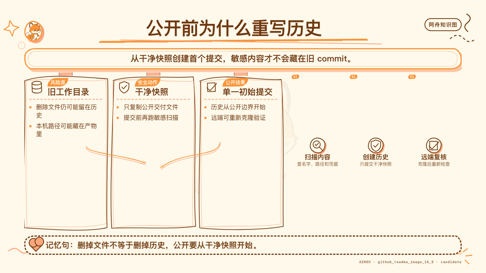
9.1 不要一次复制全部 37 个#
先从团队真正反复遇到的失败开始。一个适合 UI 客户端团队的最小集合通常是：
ask-matt；grill-with-docs；to-spec；to-tickets；implement；tdd；diagnosing-bugs；domain-modeling；codebase-design；code-review；writing-for-agents；handoff。
等到出现真实场景，再引入 wayfinder、wizard、teach 或 misc Skills。
9.2 建议目录#
不同 Agent 的安装位置不同，但原则相同：项目级 Skill 应该和仓库一起版本化，并通过根指导文件提供精确指针。
project/
├── AGENTS.md or CLAUDE.md
├── CONTEXT.md
├── docs/
│ ├── adr/
│ └── agents/
└── .agents/
└── skills/
├── diagnosing-bugs/
│ └── SKILL.md
├── tdd/
│ └── SKILL.md
└── code-review/
└── SKILL.md
不要依赖某一个工具的私有目录名作为核心方法。关键是 Agent 能发现 Skill、团队能审查变更、版本能和项目一起演进。
9.3 本地化不是改名字#
把上游 Skill 复制进项目后，至少检查：
| 检查项 | 要回答的问题 |
|---|---|
| 触发条件 | 是否会在小问题上误启动重流程 |
| 工具能力 | 当前 Agent 是否真的支持子 Agent、浏览器、tracker 和 shell |
| 文件路径 | tracker、ADR、领域文档放在哪里 |
| 安全边界 | 哪些命令、凭据和生产动作不能自动执行 |
| 完成条件 | 项目真正的测试、类型检查、构建和发布门禁是什么 |
| 术语 | Skill 是否使用项目的 CONTEXT.md 词汇 |
9.4 根指导文件只做路由#
不要把 12 个 Skill 的全文塞进 AGENTS.md。更好的写法是：
Bug fixes use the project diagnosing-bugs Skill when the symptom is hard to reproduce
or spans multiple layers. Read `.agents/skills/diagnosing-bugs/SKILL.md` completely
before forming a root-cause theory.
这一行同时说明了触发条件、目标文件和必须完整读取的动作，是一个锋利的 context pointer。
9.5 工具不支持时，流程要降级#
Skill 里写了并行子 Agent，不代表当前运行时一定有该能力；写了 tracker API，也不代表账号已经授权。降级时要保留方法的核心：
- 没有子 Agent：顺序执行 Standards 与 Spec review，并保持结论分开；
- 没有 tracker：使用本地 Markdown tickets；
- 没有浏览器：保留视觉验证为 hold，不伪造通过；
- 没有生产权限：输出可审阅向导或阻塞，不冒充已完成。
9.6 迁移清单#
- 固定并记录上游 commit。
- 选择最小 Skill 集合。
- 运行仓库 setup。
- 建立
CONTEXT.md与 ADR 位置。 - 把项目真实命令写进完成条件。
- 检查 Agent 运行时能力与降级路径。
- 用一个小任务跑通。
- 用一个真实 bug 验证 red-capable 反馈环。
- review Skill 本身的触发、权限和隐私边界。
- 记录上游更新策略，避免静默漂移。
第 10 章 · 新人四周训练路线#
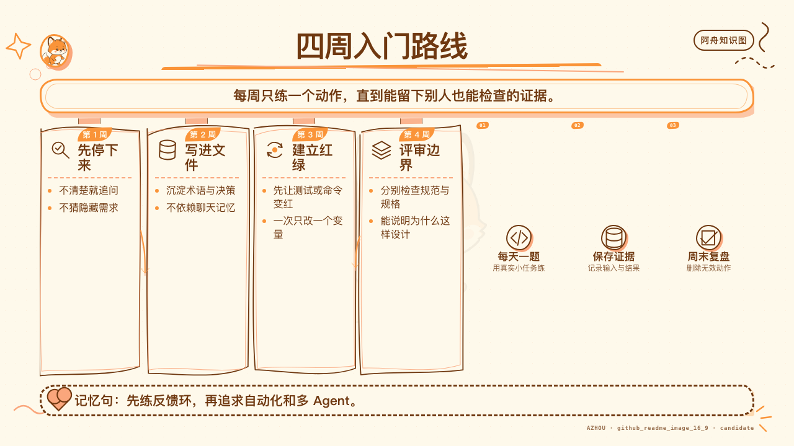
这四周不是按自然周强制打卡，而是四个能力台阶。新人可以每周只做一个小任务；已经稳定使用 Agent 的开发者可以直接用每周验收做跳级测试。验收还做不到，就从该周开始，不需要回到第一页重读。
第 1 周：学会停下来#
目标：不再把所有任务都翻译成「立刻写代码」。
练习：
- 用
grill-me澄清一个不依赖代码的想法； - 用
ask-matt为三个不同规模任务选流程； - 每次 Agent 解释没落地时使用
wait-what； - 为一个项目建立 10 个以内的
CONTEXT.md术语。
验收：能区分事实问题、产品决定和需要外部专家回答的问题。
第 2 周：学会留下跨会话证据#
目标：从一次性对话进入可交接工程。
练习：
- 完成一次
grill-with-docs； - 把已定内容转成
to-spec； - 把规格拆成 3–5 张 tracer-bullet tickets；
- 用
handoff把一项未完成工作交给新会话。
验收：新会话不需要重问已经决定的范围，也不会依赖整段聊天记录。
第 3 周：学会用反馈限制 Agent#
目标：让正确性来自可运行信号，不来自 Agent 自信。
练习：
- 用
tdd完成一个小行为； - 确认测试位于公共 seam；
- 对一个真实 bug 建立 red-capable 命令；
- 把最小复现固化成回归测试。
验收：能展示同一条命令先红后绿，并解释它为什么捕获的是目标症状。
第 4 周：学会评审设计和意图#
目标：不只问「能不能跑」，还问「是不是对的事、是不是可持续的设计」。
练习：
- 用
code-review分开 Standards 与 Spec； - 对一个高频修改区域做 architecture candidate survey；
- 用删除测试判断模块是否有深度；
- 处理一个小型 merge conflict，并记录两侧意图。
验收：review finding 能指向行为、证据和最小修复，不使用模糊审美语言。
毕业标准#
一个新人不需要背完 37 个 Skill。能做到下面五件事，就已经跨过最关键的门槛：
- 模糊时先澄清，明确时不重复讨论；
- 大任务留下 spec、tickets 和 handoff；
- bug 先建反馈环，再谈理论；
- 测试放在公共 seam，不锁死内部实现；
- 完成声明只引用当前验证，不引用历史印象。
中级进阶：从一次任务到稳定交付链#
如果你已经达到上面五条，不需要再背 Skill 名。连续完成下面四个挑战：
- 选一个中等功能，从一次
grill-with-docs一直走到code-review，要求每个产物都能独立给新会话使用。 - 选一个历史 bug，重建 red-capable 命令，记录为什么原来的测试没有捕获它。
- 故意在上下文不完整时做一次 handoff，让新会话先找出遗漏，再修正 handoff 模板。
- 对一份技术文档建立断言账本，至少修正一条「读起来正确、代码却已漂移」的说法。
中级验收：任意抽掉一段原始聊天，后续工作仍可以从 spec、ticket、测试和 handoff 恢复。
高阶进阶：从会使用 Skill 到会设计 Harness#
高阶练习不再以「任务完成」为终点，而是检查工作流在换人、换 Agent、换工具和局部失败时是否仍然成立：
- 为团队画一张「任务状态 → 失败风险 → Skill → 产物 → 验证」映射。
- 为每个大型编排 Skill 定义显式调用权，避免 Agent 在小任务上自动开启大流程。
- 为每个工具依赖写降级路径，同时标注不允许降级的安全、语义和验证门槛。
- 用三次真实运行复盘 Skill 的路由错误、信息访问缺口和无效指令，不用一次成功会话修改全局规则。
- 对完成声明建立证据等级：本地通过、集成通过、外部发布和人工批准不得互相替代。
高阶验收：抽掉一个子 Agent、一个 tracker API 或一个特定终端工具后，流程仍然能以较慢但可验证的方式完成；若不能，其依赖必须被明确写进 Skill 合同。
第 11 章 · 37 个 Skills 逐项小白手册#
这一章不是把 frontmatter 翻译成中文，而是把每个 Skill 还原成一个新手可以执行的工作单元。建议第一次阅读时只看“什么时候用”和“什么时候别用”；遇到真实任务时，再回来照着“输入、步骤、产物、验收”运行。
固定版本说明： 本章只对固定提交
6654f6b60cd9d5be8b54c6fafe44346dabeb3b76负责。调用语法会随 Agent 客户端变化，但触发条件、步骤顺序和证据要求仍然可以迁移。
11.1 Engineering：从想法到交付的 18 个 Skill#
11.1.1 ask-matt：不知道走哪条路时先路由#
一句话理解： 它不替你做任务，而是判断当前最接近哪种失败风险，并给出 Skill 链路。
什么时候用： 你知道要解决什么，但不知道应该先澄清、原型、写规格、拆票、诊断还是直接实现。
什么时候别用： 当前动作已经明确，例如“这个测试已经稳定复现，请按 diagnosing-bugs 继续”。这时再次路由只会增加一层转述。
它会怎样判断：
- 想法是否仍有未决问题；
- 问题能否在对话里回答，还是必须用原型或研究回答；
- 工作是否超过一个会话；
- 当前是在做功能、处理缺陷、维护代码库，还是跨越会话边界；
- 下一阶段需要继续、清空上下文、交接、压缩，还是交给子 Agent。
匿名 UI 客户端例子： 团队准备增加“启动时恢复上次工作区”，但不清楚恢复失败时的交互，也不清楚状态应该由哪一层持有。合理路由是先 grill-with-docs，状态模型仍说不清时转 prototype，决定稳定后再 to-spec。
可直接使用的输入：
/ask-matt
我要给桌面客户端增加“启动时恢复上次工作区”。
交互和状态归属还有未决问题，预计会改动界面、持久化和测试。
请判断应该先用哪些 Skill，并说明每次切换的条件。
产物与验收： 至少得到“当前阶段、推荐 Skill、为什么、何时切到下一 Skill、哪些 Skill 暂时不要用”。如果回答只是列出 37 个名字，路由没有完成。
新手误区： 把它当总控 Agent，一旦调用就让它包办所有阶段。它的职责是给路线，不是无限接管。
11.1.2 setup-matt-pocock-skills：第一次使用前对齐仓库现实#
一句话理解： 这是工程 Skills 的一次性仓库配置，把 tracker、triage 词汇和领域文档位置写清楚。
什么时候用： 刚把 Skills 引入一个仓库，准备第一次运行 triage、to-spec、to-tickets 或领域建模流程。
什么时候别用： 每个任务开始都跑一次；或者在不了解现有约定时直接覆盖已有 tracker 和文档布局。
输入：
- 仓库现有 issue/PR 管理方式；
- 已有标签或状态；
- 根指导文件；
CONTEXT.md、ADR、docs 的当前位置；- 团队愿意接受的最小改动。
执行顺序：
- 先探索现状，不创建文件；
- 报告发现、冲突和可选方案；
- 由用户确认 tracker、标签词汇和领域文档布局；
- 只写经过确认的配置与指针；
- 回读文件，确认下游 Skill 能找到它们。
匿名 UI 客户端例子： 仓库已经使用本地 Markdown issue，而不是 GitHub Issues。setup 不应该强行迁移平台，只需把本地 issue 根目录、阻塞关系写法和领域文档路径配置给后续 Skills。
产物与验收： 下游 Skill 能回答三件事：规格发布到哪里、ticket 状态怎样表达、领域术语和 ADR 去哪里读写。缺一项都不算 setup 完成。
新手误区： 把 setup 当脚手架生成器。它真正生成的是共同约定；文件只是约定的载体。
11.1.3 grill-with-docs：在真实仓库里把问题问清楚#
一句话理解： 它把 grilling 的决策树与 domain-modeling 的共同语言结合起来，边讨论边留下仓库证据。
什么时候用： 模糊问题发生在一个真实工作目录里，而且决定会影响模块、术语、边界或长期维护。
什么时候别用： 没有仓库的个人想法，用 grill-me；决定已经完成，只需整理，用 to-spec。
Agent 必须自己查的事实： 现有组件、状态管理方式、测试框架、类似交互、编码规范、领域文档。不要把这些问题甩回给用户。
必须交给人决定的事项： 用户体验取舍、容错政策、范围、非目标、兼容策略、风险偏好。
匿名 UI 客户端例子： “关闭窗口”究竟是退出应用、隐藏到托盘，还是保留后台任务？Agent 先查当前窗口生命周期，再向用户询问产品决策；确定词义后，立即把“关闭”“退出”“隐藏”写入领域词汇。
可直接使用的输入：
/grill-with-docs
请把“关闭窗口后的行为”问清楚。
你负责先检查仓库现状；需要产品取舍时再问我。
每个稳定术语立即更新领域文档，只有难以逆转的决定才建议 ADR。
产物与验收： 决策树 frontier 为空；事实有代码或文档证据；术语在讨论形成时已经落盘；仍有未决问题时不能假装进入实现。
新手误区： 会后一次性写总结。这样最容易漏掉决定改变过程中的词义修正。
11.1.4 triage：先确认来件是什么，再决定谁处理#
一句话理解： 它把外部 issue 和 PR 推进一套状态机，不让未经核验的描述直接变成实现任务。
适合处理： 未分类 issue、needs-triage、补充信息后重新活跃的 needs-info，以及明确点名的外部 PR。
不适合处理： to-tickets 刚生成的实现票。那些票已经是 agent-ready，再 triage 一次属于重复流程。
核心步骤：
- 读完整 body、评论、标签、作者和时间；PR 还要读 diff；
- 用领域概念搜索是否已经实现，并检查过去是否明确拒绝；
- 给出分类和状态建议，等待维护者方向；
- 对 bug 真实复现，对 PR 运行相关验证；
- 信息不足才进入 grilling；
- 写 agent brief、needs-info notes，或按理由关闭。
匿名 UI 客户端例子： 用户报告“设置偶尔丢失”。triage 先检查是否已存在自动恢复逻辑和类似 issue，再按报告步骤复现。没有操作系统、版本和最小步骤时进入 needs-info，而不是猜根因并开工。
产物与验收： 每项都有当前状态、核验结果、代码位置或缺失信息、下一责任人。一个“看起来像 bug”的标签不是核验。
新手误区： 只改标签不留可执行 brief；或者把“无法复现”误写成“问题不存在”。
11.1.5 wayfinder：大工程先画决策地图，不急着施工#
一句话理解： 当目标远到一个会话看不清路线时，用 decision tickets 逐步驱散 fog of war。
什么时候用： 绿地项目、跨多子系统的大功能、关键决定相互依赖、单次 grilling 放不下。
什么时候别用： 一个边界清楚、两三天能完成的功能。wayfinder 的认知成本很高。
地图里装什么：
- Destination：走到什么状态算看清路线；
- Decisions so far：已经稳定的决定；
- Not yet specified：尚未解决的区域；
- Out of scope：这张地图不处理什么；
- Decision tickets：每张只解决一个决定，并声明依赖。
ticket 类型： 可以通过讨论解决的 grilling ticket；必须看到可运行结果的 prototype ticket；依赖一手资料的 research ticket；必须由人完成外部动作的 task ticket。
匿名 UI 客户端例子： “重做插件系统”同时涉及权限、安装、版本、沙箱、UI、迁移和回滚。先建地图；“插件权限模型”阻塞“安装确认 UI”，“版本兼容策略”阻塞“自动更新”。地图清晰后再 to-spec，不要直接 implement。
产物与验收： 所有重要未知都被命名；ticket 之间有真实依赖；地图最终产生决定而非半成品代码；进入实现前有一份收拢后的 spec。
新手误区： 把它当超大 todo list。它管理的是“还不知道什么”，不是“代码文件有哪些”。
11.1.6 to-spec：把已经讨论清楚的内容固定下来#
一句话理解： 它只做 synthesis，不做 interview；把当前对话中的已决内容变成一份可交付规格。
输入前提： Problem、Solution、用户故事、关键实现决定、测试 seam 和 Out of Scope 已经在对话中出现。
什么时候别用： 仍有关键问题没人回答。不要让 Agent 在写规格时偷偷发明答案。
规格固定结构：
- Problem Statement；
- Solution；
- 编号 User Stories；
- Implementation Decisions；
- Testing Decisions；
- Out of Scope；
- Further Notes。
匿名 UI 客户端例子： “新增离线状态条”已经决定展示位置、状态来源、重试行为和无网络文案。to-spec 将这些决定写成用户故事，并明确不在本期加入离线编辑队列。
可直接使用的输入：
/to-spec
把当前对话整理成规格。不要追加新决定。
重点保留离线状态的来源、展示规则、重试行为、测试 seam 和非目标。
产物与验收： 每个用户故事可观察；测试决定指向公共 seam；非目标明确；任何从未在对话中出现的新政策都必须删除或标为未决。
新手误区： 把“完整”理解成“什么都写”。规格的完整，是决定边界完整，不是篇幅大。
11.1.7 to-tickets：把规格切成能独立反馈的纵向薄片#
一句话理解： 每张 ticket 都穿过必要层级，交付一条可观察行为，并显式声明 blocked-by 边。
输入： 一份规格、计划，或已经足够稳定的当前对话；可选地先探索代码以找到真正 seam。
切票检查：
- 用户完成这张票后能观察到什么变化；
- 是否包含它所需的界面、契约、逻辑和测试；
- 是否可以独立验收；
- 是否真的被另一张票阻塞；
- 标题能否表达行为，而不是技术层。
匿名 UI 客户端例子：
- 票 1：用户保存一个最小账号配置，重启后仍可见；
- 票 2：用户验证配置并看到成功/失败；
- 票 3：用户设为默认并完成一次真实调用；
- 票 4：用户删除配置，运行时安全回退。
不好的切法： “先写类型”“再写 IPC”“再写页面”“最后补测试”。关闭前三张票时用户仍得不到可用行为。
产物与验收： 每张票有 Parent、What to build、Acceptance criteria、Blocked by；依赖图没有循环；除宽范围机械迁移外，默认使用 tracer-bullet。
新手误区： 为了看起来并行，把真实依赖删掉；或者把所有票都标成阻塞，失去 frontier。
11.1.8 implement：按批准的 spec 或 ticket 施工#
一句话理解： 这是施工入口：按预先批准的工作说明实现，在约定 seam 做 TDD，持续验证，最后 review 并提交。
前置输入： spec 或 tickets、当前分支、预先同意的测试 seam、项目真实验证命令。
执行顺序：
- 读清当前票和所有阻塞项；
- 在约定 seam 尽可能使用
tdd； - 经常运行单测文件和 typecheck；
- 只做当前票，不顺手扩范围；
- 结束时运行完整测试套件；
- 调用
code-review； - 修复 finding 后提交当前分支。
匿名 UI 客户端例子： 当前票只要求“验证账号配置并显示结果”。实现不应顺便加入账号排序、导入导出和自动重试；发现产品未决定错误文案时应上报，而不是自行设计。
产物与验收： diff 可追溯到票；目标测试与 typecheck 有当前输出；完整测试在结束时运行；review finding 已处理或明确记录；提交只包含当前工作。
新手误区： 把 implement 理解成“自由发挥直到看起来完整”。它恰恰要求施工阶段服从已定边界。
11.1.9 prototype：用可丢弃代码回答一个设计问题#
一句话理解： 原型的交付物不是产品代码，而是一个被真实运行回答掉的问题。
两条分支：
- “逻辑或状态模型是否合理？”：做单文件 HTML，让非开发者通过按钮和引导场景推动状态机；
- “UI 应该长什么样？”：在同一路由提供多个结构明显不同的变体，可快速切换。
共同约束： 明确标注 prototype；一条命令或双击即可运行；默认只用内存状态；不补生产级抽象、测试和错误处理；每次动作都把相关状态暴露出来。
匿名 UI 客户端例子： 团队无法仅靠文字决定“任务详情”应该是抽屉、侧栏还是独立页。原型同时做三个差异足够大的变体，使用同一组真实长度的合成数据，让用户完成相同任务后再决定。
产物与验收： 问题写在原型顶部；每个变体能被运行；用户给出 verdict；被验证的决定进入正式 issue/spec；原型保存在 main 之外的 throwaway 分支并留下指针。
新手误区： 把原型做成“以后也许能直接上线”的半成品，于是开始补架构、权限和完整测试，反馈速度反而消失。
11.1.10 diagnosing-bugs：先制造稳定红色，再形成理论#
一句话理解： 疑难 bug 的第一产物是一条能捕获精确症状的 red-capable 命令，而不是一篇根因猜测。
完整循环：
- Redact：先移除日志、数据和命令中的敏感信息；
- Feedback loop：找到当前会红的测试、脚本或自动化；
- Reproduce：确认捕获的是用户症状；
- Minimise：删掉无关步骤和变量；
- Hypothesise：列 3–5 个可证伪假设；
- Instrument：一次只插一个探针，区分假设；
- Fix：最小修复并加入回归测试；
- Cleanup：删除临时日志，重新跑当前验证。
匿名 UI 客户端例子： “切换工作区后偶尔显示旧标题”。先写自动化连续切换并断言标题与当前工作区一致；确认它在旧代码上稳定失败；再分别测试缓存未失效、事件乱序、状态覆盖等假设。
可直接使用的输入：
请调用 diagnosing-bugs。
症状是连续切换工作区后标题偶尔仍显示上一个名称。
先建立能在当前分支稳定变红的最小命令；在看到红色前不要给根因结论。
产物与验收： 同一条命令在修复前红、修复后绿；回归测试位于公共 seam；临时埋点被移除；日志已脱敏。
新手误区： 先写“深度根因分析”，最后才发现症状根本不能稳定复现。
11.1.11 tdd：一次只推动一个可观察行为#
一句话理解： 在预先同意的公共 seam 上，写一个因为目标行为缺失而失败的测试，只实现足够让它变绿的代码。
好测试的三个问题：
- 它验证用户或调用方可观察的行为吗；
- 重构内部实现时它仍应成立吗；
- 失败时能说明哪条行为被破坏吗。
seam 选择： 优先最高层、最少数量、稳定的公共接口。外部 API、时钟、随机数可以 mock；不要 mock 自己的模块来模拟成功。
匿名 UI 客户端例子： 对“保存设置后重启仍保留”写一条穿过公共设置接口的测试，而不是分别测试序列化函数、文件函数和状态 reducer 的内部调用顺序。
循环：
- 写一条测试；
- 运行并看到预期红色；
- 写最小实现；
- 再运行看到绿色；
- 进入下一条行为。
产物与验收： 每个测试都曾因目标行为缺失而失败；测试没有复刻实现算法；没有先批量写十个红测试；固定提交当前把重构交给 review 阶段，不能把其他 TDD 版本的口号强加进来。
新手误区： 先写完实现，再补一个必绿测试，然后把它称为 TDD。
11.1.12 research：外部事实必须回到一手来源#
一句话理解： 把外部阅读交给后台 Agent，沿官方文档、规范、源码或第一方 API 追溯每项关键事实，并保存带引用的 Markdown。
什么时候用： 实现决定依赖浏览器行为、SDK 契约、协议、框架限制、版本差异或官方最佳实践。
什么时候别用： 答案就在当前仓库；或者只是想收集更多二手观点，却没有待解决的具体决定。
匿名 UI 客户端例子： 要决定系统通知在不同桌面平台的权限与点击行为。research 应查看各平台官方文档和所用运行时的官方 API，不以博客摘要代替。
输入要写清： 待回答的问题、固定版本、需要支持的环境、输出路径、哪些决定会被研究结果改变。
产物与验收： 单个 Markdown 文件；每个关键结论附近有一手来源；事实与推断分开；版本和日期可追溯；文件进入后续 grill-with-docs，不直接冒充产品决定。
新手误区： 搜到“大家都这么做”就停止追溯；或者只把链接堆在末尾，读者无法知道哪条链接支持哪项结论。
11.1.13 domain-modeling：先统一词义，再让代码承载词义#
一句话理解： 用具体场景把模糊、重载或冲突的领域词压实，并立即更新 CONTEXT.md。
重点动作：
- 用现有 glossary 挑战新说法；
- 把“状态正常”“保存成功”这类模糊词变成可观察场景；
- 区分同一个词承担的多个概念；
- 把术语和真实代码位置交叉引用；
- 决定形成时 inline 更新；
- 只有难以逆转且不记录会令人意外时才建议 ADR。
匿名 UI 客户端例子： “连接”可能指保存凭据、验证凭据、建立长连接或启用账号。把它们统一叫连接会让 UI 文案和函数名不断漂移。领域建模应给每个行为一个能用例子反证的名字。
产物与验收： glossary 词条有定义、正例、反例和代码指针；后续 spec、ticket、测试和界面文案使用同一词义；ADR 数量保持克制。
新手误区： 把 CONTEXT.md 写成百科全书。它首先是共同语言和导航，不是整个系统的复制品。
11.1.14 codebase-design：用深模块语言讨论代码形状#
一句话理解： 它提供一组精确词汇，帮助团队判断复杂度是否被藏在小接口后面。
核心词：
| 词 | 小白解释 |
|---|---|
| Module | 一组共同承担某种能力的实现 |
| Interface | 调用方必须理解的表面 |
| Depth | 实现能力相对接口复杂度的比值 |
| Seam | 可以从外部验证或替换行为的位置 |
| Adapter | 把一种外部形状翻译为模块形状 |
| Leverage | 一处改动能服务多少调用方 |
| Locality | 理解一个行为需要跳多少位置 |
删除测试： 假设删除这个模块。调用方需要重新实现多少复杂逻辑？如果只是把几行转发挪走，它很浅；如果大量规则重新散到各处，它可能很深。
匿名 UI 客户端例子： 五个设置组件依次调用 read、parse、merge、validate、write。更深的模块可以只暴露 loadSettings 与 saveSettings，把顺序、默认值和迁移藏起来。
产物与验收： 设计讨论能说明接口、被隐藏的复杂度、seam、测试面和调用方收益；不会只说“再抽一层”或“更优雅”。
新手误区： 把文件短、函数多、类多误认为模块化。模块深度看的是调用方少学了多少，不是文件数量。
11.1.15 improve-codebase-architecture：先找高价值候选，再讨论接口#
一句话理解： 它先调查最近常改、理解成本高的区域，生成视觉 HTML 候选报告；用户选中后才进入 grilling。
执行顺序：
- 如果用户没给范围，先从一段 git 历史找热点；
- 读取
CONTEXT.md和相关 ADR； - 用
codebase-design词汇调查浅模块、低 locality 和不真实 seam； - 对候选做删除测试；
- 在系统临时目录生成带 before/after 的 HTML 报告；
- 用户选择一个候选；
- 再通过 grilling 讨论接口和迁移。
匿名 UI 客户端例子： 最近十次改动都触碰窗口偏好、托盘行为和启动设置。报告发现调用方必须知道同一套默认值和迁移顺序，推荐把这些规则放进一个深模块，但在用户选择前不直接重构。
产物与验收： 候选有文件、问题、方案、收益、推荐强度和图；顶级建议有依据；报告不落入仓库；未被选择的候选不产生代码改动。
新手误区： 跑一次架构扫描就自动重构全仓；或者脱离近期变化，列一堆理论上可优化但没人会再碰的区域。
11.1.16 code-review：把 Standards 与 Spec 分开验收#
一句话理解： 钉住一个 fixed point，再分别回答“代码是否符合仓库规范”和“代码是否完成原始需求”。
前置证据：
- fixed point：commit、branch、tag 或 merge-base；
- spec source：issue、规格或验收清单；
- standards source：仓库指导文件、编码标准和相关文档；
- 当前 diff 与验证输出。
两个隔离问题：
- Standards 轴：设计、可读性、安全、测试、仓库规则是否满足；
- Spec 轴：用户故事、非目标、边界案例、验收是否满足。
匿名 UI 客户端例子： 新的错误提示组件结构清晰、测试完整，但漏掉“离线时不显示重试按钮”的需求。Standards 可通过，Spec 仍失败；总评不能用代码质量把需求缺口平均掉。
产物与验收： 两条轴分别列 finding、证据、严重度和最小修复；聚合时保留来源；只有两轴都通过才能收口。
新手误区： 只做 lint 风格检查；或者只照需求点功能，忽略测试泄漏内部实现和越界依赖。
11.1.17 resolving-merge-conflicts：解决两侧意图，不是选一侧文本#
一句话理解： 对每个冲突 hunk 追溯两侧提交、issue 和 PR 的原始意图，尽可能同时保留，再完成 merge/rebase。
执行顺序：
- 查看当前 merge/rebase 状态和历史；
- 找到每侧改动的 primary source；
- 逐 hunk 解释两侧意图；
- 能兼容就合并，不能兼容就按本次合并目标选择并记录取舍；
- 不发明新行为；
- 运行项目检查；
- stage 并继续操作直到结束。
匿名 UI 客户端例子： 一侧给设置项增加禁用态，另一侧把同一区域改成异步加载。正确结果应同时保留加载态和禁用规则，而不是接受“ours”或“theirs”。
产物与验收： 工作树没有未解决冲突；项目验证通过；merge/rebase 完成；每个不兼容取舍能解释来源。上游 Skill 明确要求总是解决，不执行 --abort。
新手误区： 看到冲突标记就按“较新的代码”选择。时间不能说明产品和架构意图。
11.1.18 wizard：把只有人能做的步骤变成可审阅向导#
一句话理解： 当 Agent 确实无法代替人点击控制台、处理密钥或确认不可逆动作时，生成一份阶段化 Bash 向导。
什么时候用： 创建第三方凭据、配置 CI secret、陌生控制台操作、一次性迁移或 cutover。
什么时候别用： Agent 可以通过已有工具安全完成的普通命令。不要把自动化能力退化成“请人手工做”。
制作步骤：
- 读仓库，列出全部人工阶段和每个阶段产生的值；
- 确认值从哪里取得、写到哪里、是否为 secret；
- 为每阶段写精确点击路径和 URL，不知道就查官方文档，不能编；
- 复制稳定模板，只编写 stages；
- secret 使用隐藏输入，写入时幂等；
- 不可逆动作前显式确认；
- 用
bash -n，可用时再跑 shellcheck；不要由 Agent 代替用户完整执行。
匿名 UI 客户端例子： 管理员需要在第三方控制台创建最小权限 token，再写入本地环境和 CI。向导打开正确页面、提示权限、隐藏读取 token、写入目标并运行脱敏连通性检查。
产物与验收： 所有人工步骤都有顺序和剩余阶段；每个值有来源与落点；secret 不进入聊天、日志或命令历史；脚本语法通过；是否提交仓库由可重复性决定。
新手误区： 把真实 secret 粘贴进对话，或者让 Agent 猜控制台按钮名称。
11.2 Productivity：思考、交接、教学与 Agent 文档的 7 个 Skill#
11.2.1 grill-me：没有仓库时，把脑中的想法问清楚#
一句话理解： 这是 grilling 的无仓库入口，适合计划、设计和想法澄清。
什么时候用： 答案主要在用户脑中，且当前没有需要同步维护的工作目录。
什么时候别用： 事实在代码或文档里；发生在真实仓库中时应优先 grill-with-docs；决定已经结束时应使用 to-spec。
它实际做什么： grill-me 本身非常薄，只负责调用 grilling。这正是 router Skill 的示范：入口稳定，提问纪律只有一个来源，避免两套访谈规则漂移。
匿名 UI 客户端例子： 产品负责人还没有仓库，只想先决定“首次启动引导”要解决什么问题。Agent 逐轮确认目标用户、必须完成的动作、可跳过策略、失败处理和明确非目标。
可直接使用的输入：
/grill-me
请把桌面客户端的首次启动引导问清楚。
我希望最后得到可以转成规格的决定，不要先画页面，也不要替我决定产品取舍。
产物与验收： frontier 为空；所有事实由 Agent 调查或明确标为不可得；所有产品决定由用户确认；会话末尾能清楚区分已决、未决和非目标。
新手误区： 把“relentless”理解成无限追问。问题应该沿依赖树推进，前置未定时不能问下游细节。
11.2.2 grilling：用决策树和 frontier 管理追问#
一句话理解： 把一个设计建模成决策树，每一轮只问前置条件已经稳定的 frontier，并给每题一个推荐答案。
三个关键概念：
- Decision tree：一个决定会解锁哪些后续决定；
- Prerequisite：回答当前问题前必须先稳定的上游决定；
- Frontier：此刻无需猜测就能回答的全部问题。
一轮的正确形状： 同时询问当前 frontier 上的所有独立问题；每题编号，说明为什么要问，并给出推荐答案；然后等待用户回答，重新计算下一轮。
事实与决定的边界： “当前框架支持什么”由 Agent 查；“团队愿意承担哪种兼容成本”由用户定。一个好的 grilling 会减少用户负担，而不是把代码库调查伪装成访谈。
匿名 UI 客户端例子： 在决定错误详情如何展示前，必须先知道目标用户是谁、错误是否可恢复；“复制诊断信息按钮放哪”不是第一轮问题。
产物与验收： 没有问题依赖同轮尚未回答的问题；每轮结束后设计树被更新；frontier 为空才声明共同理解；在用户确认之前不进入实施。
新手误区： 一次列 30 个问题，表面全面，实际把前置与下游混在一起，用户只能凭空猜。
11.2.3 handoff：让工作跨会话旅行，但不复制整个世界#
一句话理解： 把当前会话压缩成一份放在系统临时目录的交接文档，让新 Agent 从权威产物继续。
什么时候用： 新工具、新目录、新同事、侧任务，或当前上下文必须跨越 harness。
什么时候别用： 仍在同一阶段且上下文健康；只需要开一个短子任务；spec、ticket 和 commit 已足够描述后续工作时不应重复抄写。
必须包含：
- 目标与当前状态；
- 已完成和未完成；
- 权威文件、issue、commit、diff 的指针；
- 当前验证结果及时间边界；
- 风险、阻塞和下一步；
- suggested skills；
- 敏感信息脱敏说明。
匿名 UI 客户端例子： 原会话完成了错误状态规格，新会话只负责制作 UI prototype。handoff 指向 spec 和原型目标，不重贴全部访谈；明确“不要写生产代码”和验收问题。
产物与验收： 文档位于 OS 临时目录，不污染仓库；新 Agent 无需重问已决定内容；没有密钥、个人路径和原始敏感日志；旧的测试结果被标为历史快照。
新手误区： 把聊天摘要当事实源。真正稳定的事实应在 spec、ticket、代码和测试里，handoff 只做索引与状态压缩。
11.2.4 teach：把一次问答变成跨会话学习工作区#
一句话理解： 围绕学习使命建立持久目录，用短课、参考材料、学习记录和反馈练习提升长期掌握。
工作区组成：
MISSION.md：为什么要学，所有课程的判断基准；RESOURCES.md：高可信知识来源；lessons/*.html：一次只教一个小目标；reference/*.html：可反复查阅的压缩知识；learning-records/*.md：非显然的学习进展和修正；assets/*：课程复用组件；NOTES.md：教学偏好和工作笔记。
学习原则： 知识获取阶段降低无关难度；技能训练阶段通过检索练习、间隔和交错增加“有益难度”；不要把当下答得快误认为长期记得住。
匿名 UI 客户端例子： 新人要学会诊断跨层 bug。第一课只练“构造 red-capable 命令”，第二课再练最小化，第三课混入事件乱序案例；每课都能在十几分钟内完成并得到即时反馈。
产物与验收： 每课与 mission 直接相关；有一手资料；练习难度落在当前最近发展区；课程短而可完成；长期进展写进 learning record，而不是依赖聊天记忆。
新手误区： 一次生成一门宏大课程，内容很多但没有练习反馈，也没有后续会话可读取的学习状态。
11.2.5 to-questionnaire：把别人脑中的信息异步取回来#
一句话理解： 当用户无法回答主题本身时，只采访“发给谁、需要拿回什么”，再为真正知情者写问卷。
什么时候用： 关键事实掌握在安全、运维、设计、法务、支持或外部供应商等另一位专家手里。
核心原则： Grill the send, not the subject。用户总能回答收件人是谁、需要什么决定；不强迫用户替专家猜答案。
文档结构：
- 标题、Purpose、From/To、答案用途；
- 足够回答的 Context；
- How to answer：期限、预计耗时、允许“不知道”；
- 按重要性排序的主题问题；
- 每个问题只问一个概念，必要时写 why this matters；
- Anything else。
匿名 UI 客户端例子： 团队要设计企业代理设置，但网络管理员才知道认证、证书和例外域名。问卷应询问这些事实会影响哪些决定，而不是问“您觉得页面怎么设计”。
产物与验收： to-questionnaire-<slug>.md 存在；用户列出的每个信息缺口都有问题；最重要问题在前；收件人无需了解原对话也能回答。
新手误区： 写成满意度调查或把多个问题塞进一句；异步场景可能只有一次回复机会。
11.2.6 wait-what：上一条没听懂，先退回共同前提#
一句话理解： 它要求 Agent 为上一条回复补少量背景，用 ASD-STE100 风格的简明英语和项目共同语言重新表达。
什么时候用： 回复跳步、术语密集、缺失前提，用户知道“没听懂”但不确定从哪里断线。
什么时候别用： 需要修改事实或方案；这不是“说得更简单就算修复”的替代品。
匿名 UI 客户端例子： Agent 突然说“把该 adapter 设为 seam 可以提高 locality”。调用后，它应先解释调用方目前被迫知道哪些内部步骤，再用 CONTEXT.md 已有词汇重讲 adapter、seam 与 locality。
可直接使用的输入：
/wait-what
产物与验收： 新解释补回缺失上下文；句子短；术语与领域文档一致；不是简单同义改写原句。
新手误区： 因为没听懂就让 Agent 从头重写整份文档。先修复刚刚断掉的那一步，成本更低。
11.2.7 writing-for-agents：写给 Agent 的文档要改变行为#
一句话理解： 用 context pointer、信息层级、明确步骤和完成条件，让 Agent 每次运行采取同一过程，而不是生成同一句输出。
两个负担：
- Context load：总在上下文里的文字成本，例如根指导文件；
- Cognitive load：人需要记住有哪些文档、何时调用的成本。
context pointer 的两个任务： 说明目标材料是什么；写清哪些不同分支会触发读取。一个重要文档藏在模糊指针后面，是可重复性缺陷。
信息层级：
- 当前文件中的执行步骤；
- 当前文件中的按需参考；
- 由精准指针指向的外部参考。
匿名 UI 客户端例子： 根指导文件不应粘贴整套跨进程安全规范，只需写：“修改 renderer 与主进程数据通道时，先读取 docs/security-boundaries.md 并运行边界测试。”这条指针同时有触发和动作。
写 Skill 时的验收： description 能触发正确分支；步骤顺序可执行；边界与完成条件可观察；引用文件有达到条件；删除无行为影响的 no-op 句子。
新手误区： 通过加粗“必须”“绝对”来提高权威感。若一句话没有改变 Agent 下一步，语气再强也只是上下文噪音。
11.3 Misc：四个强场景、强工具约束的 Skill#
Misc 不是“低价值”，而是“适用面窄”。使用前先确认仓库、运行时和团队政策真的匹配，不要把作者自己的工具链习惯误当通用工程原则。
11.3.1 git-guardrails-claude-code：在 Claude Code 执行前拦截危险 Git 命令#
一句话理解： 安装 Claude Code PreToolUse hook，在 Bash 命令真正执行前阻止 push、hard reset、强制 clean 等动作。
默认拦截： git push、git reset --hard、git clean -f/-fd、git branch -D、git checkout .、git restore .。
什么时候用： 团队允许 Agent 读写本地仓库，但所有远程推送和破坏性 Git 动作必须由人单独授权。
什么时候别用： 当前不是 Claude Code；已有组织级命令策略；或者直接复制配置会覆盖现有 hooks。
执行顺序：
- 选择项目级还是全局；
- 复制 hook 脚本并赋执行权限；
- 把 hook 合并进现有 settings，不覆盖其他数组项；
- 询问团队是否调整阻止模式；
- 用模拟
git push origin main的 JSON 输入验证 exit code 2 和 BLOCKED 信息。
匿名 UI 客户端例子： 新人练习 Agent 协作时可以允许本地提交，但避免未经复核就推送远程。项目级 hook 随仓库共享，全球设置则影响所有项目，二者不能悄悄替用户选择。
产物与验收： hook 文件存在且可执行；settings 合并正确；危险样例被拒绝；普通只读 Git 命令不受影响。
新手误区： 认为写进规则文件就能阻止命令。真正的 guardrail 必须位于运行时执行边界，并用可观察失败验证。
11.3.2 migrate-to-shoehorn：只在测试里减少大型对象伪造#
一句话理解： 在 TypeScript 测试中，用 @total-typescript/shoehorn 的 helper 替换脆弱的 as Type 和双重断言。
适合： 测试只关心大型对象的少数字段；为了错误路径测试，需要故意传入错误类型；仓库已经接受该依赖。
明确不适合： 生产代码。原文强调 shoehorn 只用于 test data。
三种 helper：
| helper | 用途 |
|---|---|
fromPartial() |
只提供部分字段，同时保留字段类型检查 |
fromAny() |
故意构造错误类型的输入 |
fromExact() |
要求完整对象，之后可再切回 partial |
匿名 UI 客户端例子： 一个窗口对象有几十个字段，测试只关心 id 和 isVisible。使用 partial helper 比伪造整棵对象或 as unknown as WindowState 更清楚。
产物与验收： 依赖仅在 devDependencies；目标测试中的断言被有意选择的 helper 替换；typecheck 与测试通过；没有扩散到生产目录。
新手误区： 机械替换所有 as。类型断言可能有不同语义，迁移前必须先理解测试为什么需要不完整或错误数据。
11.3.3 scaffold-exercises：按固定课程结构生成可 lint 的练习骨架#
一句话理解： 为特定课程仓库创建编号 section、exercise，以及 problem/solution/explainer 目录，并通过专用 lint。
什么时候用： 当前仓库确实使用 pnpm ai-hero-cli internal lint 和上游规定的练习布局。
什么时候别用： 普通产品仓库。不要仅因为“要写教程”就引入一套不匹配的课程目录。
核心规则： section 使用 XX-name；exercise 使用 XX.YY-name；每题至少有一个 variant；每个 variant 有非空 readme.md；有代码时 main.ts 不得是空壳；移动时使用 git mv。
匿名 UI 客户端例子： 团队要做“状态管理诊断练习”。如果课程仓库匹配，先建 explainer；需要动手时再增加 problem 和 solution，而不是在产品源码旁生成练习目录。
产物与验收： 目录编号连续；readme 无断链；专用 lint 通过；重命名保留历史；提交只包含计划中的练习骨架。
新手误区： 看到一个 Skill 能生成目录就拿来做任何脚手架。Skill 的完成命令和目录规则已经把它绑定到特定仓库。
11.3.4 setup-pre-commit：为已有 Node 仓库接入提交前检查#
一句话理解： 检测包管理器，安装 Husky、lint-staged 和 Prettier，把格式化、typecheck 和测试接入 pre-commit。
前置检查： 包管理器锁文件；已有 Husky/Prettier/lint-staged 配置；package.json 是否真的有 typecheck 和 test；团队是否接受提交时运行完整测试。
执行顺序：
- 检测 npm/pnpm/yarn/bun；
- 安装 devDependencies；
- 初始化 Husky；
- 写
.husky/pre-commit； - 写或合并 lint-staged；
- 仅在不存在时创建 Prettier 配置；
- 验证 hook、prepare、执行权限和实际命令；
- 用一次提交作为烟雾测试。
匿名 UI 客户端例子： 大型桌面客户端完整测试需要十分钟，直接塞进 pre-commit 会伤害反馈。此时应先讨论把快速目标检查放 pre-commit、完整检查放 CI，而不是机械照抄。
产物与验收： 不覆盖已有配置；使用真实包管理器；缺少脚本时删除对应行并报告；一次实际提交能证明 hook 生效。
新手误区： 把“检查越多越安全”当绝对真理。慢到大家绕过的 hook 不是可靠门禁。
11.4 In-progress：八个实验 Skill，先读稳定性再试#
这一组目录名就是警告。它们可以提供设计灵感，但名称、接口、工具依赖和工作流都可能变化。新人应先掌握前面的稳定 Skill，再在隔离分支或练习仓库里试。
11.4.1 claude-handoff：把 handoff 直接启动成后台 Claude Agent#
一句话理解： 它不把交接只保存成文件，而是把脱敏摘要作为 prompt 传给 claude --bg --name，让后台 Agent 立即在当前目录接手。
与稳定 handoff 的差别： 稳定版产出可携带文档；实验版直接启动特定 CLI 的后台任务，运行时耦合更强。
输入与步骤： 根据用户给的下一阶段目标压缩对话；引用已有 spec、issue、commit 而不复制；加入 suggested skills；脱敏；使用描述性名称启动后台任务。
匿名 UI 客户端例子： 当前 Agent 完成需求澄清，后台 Agent 只负责官方 API research。摘要应指向研究问题和输出路径，不能把本地 token、用户数据或完整聊天塞进命令参数。
产物与验收： 后台任务有可识别名称；工作目录正确；摘要有边界和指针；用户能通过 claude agents 管理；敏感信息未进入 prompt。
实验风险： CLI 参数、后台 Agent 能力和会话管理均为工具特定，不能当成跨 Agent 标准。
11.4.2 implement-spec：把一份规格实现为单分支 PR 的并行任务图#
一句话理解： 读取 spec 与 ticket 依赖图，持续抓取当前 frontier，通过多个 worktree/branch 并行实现，最终汇总到一个 PR。
与稳定 implement 的差别： 稳定版处理一块已定义工作；实验版是高并发编排器，负责 draft PR、多个 implementer、merger、frontier 更新和收尾 review。
执行顺序：
- 读 spec 和 tickets，理解 task graph；
- 必要时先让 exploration Agent 把共享研究保存到 repo 外；
- 创建分支和 draft PR；
- 为当前 frontier 的 tickets 分配独立 worktree；
- 完成后由 merger 合入 PR 分支；
- 依赖解除后启动下一批；
- 全部完成后运行 code review 并集中修复；
- 标记 ready，清理 worktrees。
匿名 UI 客户端例子： “账号配置”有四张票，其中 UI 文案与配置存储可并行，真实请求依赖两者。task graph 应让前两张同时开始，不能按票号盲目串行。
产物与验收： 所有 tickets 在同一 PR 可追溯；依赖得到尊重；subagent 通过 context pointers 共享资料；worktree 清理完成；最终 review 有证据。
实验风险： 需要可靠的并行 Agent、worktree 和 PR 权限；缺任一项都应降级到稳定 implement，不能伪造并行完成。
11.4.3 loop-me：把生活或工作中的重复循环写成可实现 workflow#
一句话理解： 用 stateful grilling 发现重复 loop，并把它们变成 workflows/*.md 中实现者无需再问问题的规格。
核心词：
- Trigger：事件或日程如何启动一轮；
- Checkpoint：哪些点必须由人决定；
- Push right：把人工确认尽量推迟，让自动部分先做完；
- Brief：给人的是决策摘要和资产指针，不是未经处理的原始输出。
匿名 UI 客户端例子： 每周整理崩溃报告是一个 loop。workflow 可以在新报告到达时触发，自动聚类并生成 brief，只在需要决定优先级时设置一次 checkpoint。
产物与验收： NOTES.md 记录用户世界和术语；每个 workflow 有触发、步骤、外部系统、checkpoint、brief 和完成状态；实现者无需追加问题。
实验风险： 不要为了“自动化”强加 AI、定时器或 checkpoint。原文明确要求只有 grilling 证明需要时才加入结构。
11.4.4 retro：复盘 Agent 环境，而不是评价一次回答好不好#
一句话理解： 从真实会话一手记录寻找环境改进，让下一次 Agent 更容易找到信息、得到反馈并少走弯路。
候选类别： Navigation、Automated checks、Coding standards、Global guidance、Tool economy、No-ops、Information access。
关键分工： 实现 Agent 上下文压力最大，应少背规范；review Agent 只需读 diff，更适合执行细致标准。根指导文件应该保留导航指针，具体标准放到 review 或自动检查。
匿名 UI 客户端例子： Agent 三次才找到设置迁移入口。retro 可以建议在领域文档加导航指针；若错误可被静态测试捕获，则优先新增自动检查，而不是再写一句“请小心”。
产物与验收： 候选按严重度排列；每项都有会话证据、建议放置位置和预期行为变化；不会把偶发偏好升级成全局规则。
实验风险： 会话日志可能含隐私，读取、摘录和发布前必须单独脱敏；改环境前仍需维护者确认。
11.4.5 setup-ts-deep-modules：用 dependency-cruiser 把深模块边界变成硬检查#
一句话理解： 在 TypeScript 仓库中规定包根文件是公开入口，任意子目录都是私有实现，并用 dependency-cruiser 证明违规会失败。
四条边界：
- 包外只能导入包根入口；
- 包内文件可自由互相导入；
- 测试也必须经入口验证，不得深导入内部；
- 禁止依赖环。
执行顺序： 检测包管理器和 packages root；合并而非覆盖既有配置；安装依赖；写四条规则；接入 umbrella check；创建 example package；完成 pass → 人工加入 deep import 后 fail → 删除后 pass；最后写包目录 README 和根指针。
匿名 UI 客户端例子： settings 包公开 loadSettings 与 saveSettings，内部迁移和文件实现放在 lib/。其他包深导入 lib/migrate 时，边界检查必须失败。
产物与验收： 最关键证据不是配置文件存在，而是同一规则真的观察到 pass-fail-pass；文档说明多个小入口优于一个巨型 barrel。
实验风险： 这是侵入性工具链改动。大型既有仓库应先在一个包或分支试验，评估历史 deep import 的迁移成本。
11.4.6 writing-fragments：探索期只采集有生命力的写作碎片#
一句话理解： 写作 explore 阶段不排结构，只把可能进入成稿的句子、论点、片段、类比和 leading word 追加到 Markdown。
片段可以是什么： 一句锋利表达、带理由的主张、场景、代码、半成品想法、引语、观察簇，或能支撑全文的 leading word。
文件规则： 首次只写一个工作标题；片段之间用水平线分隔；正文内部不加层级和标签；每次写前重读磁盘；默认追加，不覆盖用户手工调整。
匿名 UI 客户端例子： 为“AI 协作中的反馈环”写文章时，可以先保存“旧测试是历史，不是当前证据”这类句子、一次失败场景和“反馈债务”这个 leading word，不急着决定章节。
产物与验收： 每个片段作者自己能看懂；没有为了完整性补造素材；用户删改或重排后下一次追加不会覆盖。
实验风险： 这是写作能力，不是工程需求 Skill；不要在产品实现流程里自动触发。
11.4.7 writing-beats：从固定素材中选择一条可达的叙事路径#
一句话理解： 写作 exploit 阶段把素材当成固定矿堆，先确定读者已知概念，再逐 beat 选择下一步，每个 beat 只能依赖已经 grounded 的概念。
工作循环：
- 确认读者带着哪些 prerequisite 进入文章；
- 给 2–3 个可达的起始 beat，说明各自会引入什么概念；
- 用户选一个，只把这个 beat 写进文章；
- 重读文章；
- 再给 2–3 个当前可达的下一 beat；
- 直到自然结束。
匿名 UI 客户端例子： 文章要讲“red-capable 反馈环”。如果读者还不知道 seam，就不能在第一段直接用“公共 seam”论证测试位置；要先用失败命令的场景把反馈环 grounded。
产物与验收： 有持续更新的 grounded 概念集合；每个 beat 都能说明需要哪些前提、引入什么；素材不足时明确指出缺口，不凭空扩写。
实验风险： 逐 beat 需要频繁人机选择，不适合用户想一次性自动生成完整文章的场景。
11.4.8 writing-shape：从固定素材中逐段塑造一篇文章#
一句话理解： 同样属于 exploit，但粒度从“叙事 beat”变成“段落或内容块”，并要求每种格式都有理由。
工作循环： 通读素材；确认 reader prerequisites；给 2–3 个不同论点的开头；用户选择；逐段追问“读者下一步必须知道什么”；决定用 prose、list、table、callout、quote 还是 code；每次写后重读磁盘。
格式判断：
- prose 承担论证，list 承担真正并列项；
- callout 只容纳会打断主线的提示；
- 相同字段重复三次以上再考虑 table；
- 原措辞本身重要才引用，否则转述；
- 多行、可运行或示意代码使用 code block。
匿名 UI 客户端例子： 把一组 Skill 访谈笔记整理成教程。开头承诺解决“为什么 Agent 总在没问清时开工”，后续段落若漂到工具安装，应回到开头承诺或调整 thesis。
产物与验收： 原材料只读；成稿单独保存；每个块对读者有新作用；未 grounded 的概念先补基础；素材缺例子时要求用户提供或删掉该论证。
实验风险： 它不是发布、平台排版或事实研究工具；这些必须由其他流程承担。
11.5 把 37 个名字压缩成 6 个新手问题#
当你不确定时，不必从头翻这一章。只回答下面六问：
- 需求还没问清吗？ 无仓库用
grill-me，有仓库用grill-with-docs，超出一个会话用wayfinder。 - 决定已经清楚了吗？ 写
to-spec；需要多人或多会话交付，再用to-tickets。 - 现在已经进入施工了吗？ 用
implement，在预定 seam 内按需加载tdd，结束前code-review。 - 是一个难 bug 吗？ 用
diagnosing-bugs，先拿到稳定红色。 - 复杂度或词义正在泄漏吗？ 词义用
domain-modeling，模块形状用codebase-design，候选调查用improve-codebase-architecture。 - 问题必须跨人、跨工具或跨会话吗？ 用
to-questionnaire、wizard或handoff，分别对应“答案在别人脑中”“动作只有人能做”“工作需要旅行”。
第 12 章 · Matt Pocock 本人怎样讲 Skills#
前 11 章主要解释固定提交中的 37 个 Skills。本章换一个视角：只看 Matt Pocock 自己的公开仓库和 AI Hero 官网，学习他如何解释 Skills、上下文、反馈环和交接。
12.1 先分清两条时间线#
| 时间线 | 本书怎样使用 | 不得怎样使用 |
|---|---|---|
| 2026-08-24 的固定提交 | 证明 37 个 Skills 当时的数量、分类、文件和明文规则 | 不代表后续仓库仍然不变 |
| 2026-09-01 检索到的官网页面 | 补充作者当时的公开教学表述 | 不反向改写固定提交，也不代表作者为本书背书 |
这一区分很重要。「作者今天如何讲」和「固定版本当时包含什么」是两个问题。把它们混在一起，就会让版本化教材失去可核验性。
12.2 十条作者公开表述#
12.2.1 Skill 是过程级约束，不是平台魔法#
在 AI Skills for Real Engineers 中，Matt 把 Skills 描述为交给编码 Agent 的小型、聚焦指令，目的是让 Agent 按资深工程师式的工作方法执行。
同一页还强调 Skills 可以组成链路：前一个的产出会成为后一个的输入。
对小白的翻译：一个 Skill 不需要拥有整个项目。它只需要产出下一步能信任的东西，例如决策清单、spec、ticket、红色测试或 review findings。
12.2.2 跨会话不会凭空保留项目记忆#
在 My Claude Code Cohort - A Teaser 中，Matt 强调会话之间需要额外的引导机制。这不是对每个厂商记忆功能的技术规格，而是一条工程建议：不要把依赖关系、业务词义和已定决策只留在聊天里。
行动：用 AGENTS.md、领域文档、spec、ticket 和 handoff 把重要上下文移到可版本化介质。
12.2.3 大任务要围绕上下文边界分阶段#
同一页建议将巨大功能拆成多个阶段。关键不是预测一个通用 token 阈值，而是让每个阶段都有：
- 明确的决策边界；
- 可带走的上下文产物；
- 可独立验证的完成条件；
- 下一阶段可以拒绝的错误输入。
12.2.4 反馈环是质量机制，不是收尾仪式#
Matt 在 cohort 页面上把 feedback loops 放在核心位置；在 Day 4: Feedback Loops 中又把 do-work Skills、pre-commit hooks 和 red-green-refactor TDD 放在同一套训练里。
对小白的翻译：Skill 告诉 Agent 应该怎样做，hook 自动拦下明确错误，TDD 让每个小行为都可观察。三者可组合，但没有任何一个能单独保证正确。
12.2.5 环境能回答的事实，不要再去问人#
在 The /grilling Skill 中，Matt 把问题分成两类：代码、文档、工具能查到的事实，应由 Skill 自己调查；只有产品取舍、风险偏好和业务决策才应等人回答。
实战检查：每当 Agent 问一个问题，先问「这个答案在环境里吗？」如果在，要求它带证据回来，而不是把调查推给用户。
12.2.6 问题问完不等于形成共识#
grilling 页面还把「用户确认共同理解」作为从讨论进入行动的门槛。这条规则针对的是一种常见假完成：Agent 已经没有新问题，但人对范围、取舍和验收仍没有同一张图。
可操作门槛：行动前回显「已定决策 / 未决问题 / 明确不做 / 验收方式」，再由人确认。
12.2.7 上下文快用尽时，主动交接而不是硬塞#
在 Skills Changelog: /handoff, /prototype, /review and /writing 中，Matt 把 handoff 作为上下文耗尽时的主动策略。这里的「full context」应理解为交接的目标，不是对零遗漏的保证。
一份可用 handoff 至少应当包含：当前目标、已确认决策、已改文件、当前验证、未决问题、下一个可执行动作。
12.2.8 implement 只消费已稳定的计划#
在 The /implement Skill 中，Matt 用一句很强的边界描述这个 Skill：
「It never reopens the plan.」
这不是说实现中发现错误也不能停。正确做法是：发现 spec 前提错误时，把问题退回上游决策阶段；不在实现中悄悄改目标。
12.2.9 原型只回答一个问题#
在 The /prototype Skill 中，原型被定义为可丢弃代码，用来回答一个设计问题。重点是问题优先、一次会话完成、决策后删除代码但保留结论。
如果原型开始承担迁移、安全、完整错误处理和产品级样式，它就很可能已经变成了没有 spec 的实现。
12.2.10 人工外部步骤应该被编成可恢复向导#
在 The /wizard Skill 中，外部控制台、凭据录入等人工操作被转化为交互式 Bash 向导。教学重点不是「自动化一切」，而是让不能自动化的部分也拥有顺序、安全输入、恢复点和最终摘要。
12.3 固定提交里的五个可观察事实#
12.3.1 仓库定位是真实工程，不是 vibe coding#
固定版 README 把这些 Skills 描述为作者日常工程使用的做法，并强调小、易改、可组合。这能支持「把 Skill 当成可审查流程部件」，但不能证明任意组合都经过验证。
12.3.2 TDD 明文要求先红后绿#
固定版 tdd/SKILL.md 要求先写失败测试，再只写让它通过的代码；而且测试 seam 需要前置确认。因此，「先代码后补测试」不是这个 Skill 的等价实现。
12.3.3 context pointer 的文案决定加载时机#
固定版 writing-for-agents/SKILL.md 指出，不是「有一个目标文件」就能保证 Agent 读取；指针文案需要说清什么情况下应该去读。
检查你的项目规则：把「详见 docs/testing.md」改成「修改会话状态或重试逻辑前，先读 docs/testing.md 中的状态转移测试约束」。
12.3.4 to-spec 不再做现场访谈#
固定版 to-spec/SKILL.md 明文要求综合已知信息，不重开访谈。如果缺失业务决策，应回到 grill-* 或研究阶段，不应把假设写成 spec 事实。
12.3.5 retrospective 也要检查 Agent 能否获得信息#
固定基线提交新增了「Information access」复盘类别。这给了一个很实用的诊断角度：Agent 做错时，不要只问模型或 prompt 是否不够强，还要检查它是否根本看不到日志、代码关系、运行状态或官方资料。
12.4 把作者表述转成一套工程自检#
| 检查点 | 一个合格答案的样子 |
|---|---|
| 这个 Skill 有单一职责吗 | 它只负责形成 spec，不同时实现和发布 |
| 上一步的输出能成为下一步的输入吗 | ticket 含完整验收与测试 seam，新会话无需读原聊天 |
| 可查事实是否由 Agent 自己查 | 它从仓库确认测试框架，只向人询问产品取舍 |
| 实现前是否有共同理解 | 范围、不做什么、验收命令已被回显并确认 |
| 反馈是否可重复运行 | 同一条命令能在修复前捕获问题，修复后变绿 |
| 上下文快耗尽时是否有交接 | handoff 包含当前证据与下一个动作，不依赖「去看上面聊天」 |
| 工具不可用时是否保留核心方法 | 无法并行 review 时仍分开 Standards 与 Spec 两轴串行检查 |
12.5 本章验收#
- 能区分官网当前表述与固定提交事实。
- 能用「输入→产物→下一步」而不是「更强 prompt」解释 Skill 组合。
- 能说清事实调查、人类决策、实现和验证各自的边界。
- 不把作者的公开材料写成对本书的认可或效果保证。
第 13 章 · 附录：37 个 Skills 完整索引#
下面的列表以固定提交为准。稳定分类来自仓库目录；一句话说明综合了上游 README、各 Skill frontmatter 与正文。
A. Engineering：18 个#
| Skill | 调用倾向 | 解决的问题 |
|---|---|---|
ask-matt |
用户 | 为当前情境选择 Skill 或流程 |
grill-with-docs |
用户 | 在真实仓库里问清需求，同时更新领域词汇与 ADR |
triage |
用户 | 让 issue 和外部 PR 经过状态化分诊、核验与简报 |
improve-codebase-architecture |
用户 | 调查模块加深机会，生成 HTML 候选报告，再逐项讨论 |
setup-matt-pocock-skills |
用户 | 配置 tracker、triage labels 与领域文档布局 |
to-spec |
用户 | 把已完成的对话决策整理成规格并发布到 tracker |
to-tickets |
用户 | 把计划拆成声明阻塞关系的 tracer-bullet tickets |
implement |
用户 | 按 spec/tickets 实现，在约定 seam 做 TDD 并完成 review |
wayfinder |
用户 | 用决策 tickets 管理一个会话装不下的大型工作 |
prototype |
模型 | 用可抛弃代码回答状态模型或 UI 结构问题 |
diagnosing-bugs |
模型 | 从 red-capable 反馈环开始诊断疑难 bug 与性能退化 |
research |
模型 | 用高可信一手来源调查外部事实并形成引用文档 |
tdd |
模型 | 在预先同意的公共 seam 做一行为一循环的红绿开发 |
domain-modeling |
模型 | 打磨共同语言，及时更新 CONTEXT.md，谨慎记录 ADR |
codebase-design |
模型 | 提供深模块、接口、seam、adapter 等共享设计词汇 |
code-review |
模型 | 并行或隔离执行 Standards 与 Spec 两轴评审 |
resolving-merge-conflicts |
模型 | 按两侧一手意图逐 hunk 解决 merge/rebase 冲突 |
wizard |
模型 | 为只有人能完成的控制台、凭据和迁移步骤生成安全向导 |
B. Productivity：7 个#
| Skill | 调用倾向 | 解决的问题 |
|---|---|---|
grill-me |
用户 | 不依赖仓库地把模糊想法问清楚 |
handoff |
用户 | 把当前对话压缩为新 Agent 可继续的临时交接文档 |
teach |
用户 | 在持久工作区里跨会话教学，依赖可信资料与学习记录 |
to-questionnaire |
用户 | 把别人掌握的未知信息整理成异步问卷 |
wait-what |
用户 | 上一条消息没落地时，用缺失上下文和直白语言重讲 |
grilling |
模型 | 用决策树和 frontier 组织多轮追问 |
writing-for-agents |
模型 | 设计 context pointer、降低两类负担并删除 no-op 指令 |
C. Misc：4 个#
| Skill | 适用条件 | 注意事项 |
|---|---|---|
git-guardrails-claude-code |
需要用 Claude Code hooks 阻止危险 Git 命令 | 工具特定，先确认运行时 |
migrate-to-shoehorn |
测试项目使用 @total-typescript/shoehorn |
作者技术栈特定，不是通用规则 |
scaffold-exercises |
需要课程章节、题目、答案和讲解目录 | 面向教学内容生产 |
setup-pre-commit |
需要 Husky、lint-staged、Prettier、类型检查和测试 | 先匹配现有包管理器与 CI |
D. In-progress：8 个#
| Skill | 当前方向 | 稳定性提醒 |
|---|---|---|
claude-handoff |
用后台 Claude Agent 立即接手当前对话 | 工具特定，行为可能变化 |
implement-spec |
实现一份规格 | 与稳定 implement 重叠，先看当前文本 |
loop-me |
多会话拷问工作流规格 | 实验中 |
retro |
对一次编码会话做 retrospective | 实验中 |
setup-ts-deep-modules |
用 dependency-cruiser 约束 TypeScript 深模块 | 工具链侵入较大，先原型验证 |
writing-beats |
把素材组织成逐步展开的叙事 beats | 写作实验 |
writing-fragments |
挖掘未结构化写作碎片 | 写作实验 |
writing-shape |
逐段把原始材料塑造成文章 | 写作实验 |
E. 一页选型表#
| 你现在卡在哪里 | 先用什么 |
|---|---|
| 不知道选哪个 Skill | ask-matt |
| 想法模糊，答案在自己脑中 | grill-me |
| 想法模糊，需要结合仓库 | grill-with-docs |
| 一个会话装不下 | wayfinder |
| 决策已完成，需要规格 | to-spec |
| 规格需要拆成可交付任务 | to-tickets |
| 有批准的 ticket，需要施工 | implement |
| UI/状态模型必须看见才能决定 | prototype |
| 新功能或 bug 要测试先行 | tdd |
| bug 难复现或跨多层 | diagnosing-bugs |
| 决定依赖外部技术事实 | research |
| 术语混乱 | domain-modeling |
| 模块接口浅、复杂度泄漏 | codebase-design |
| 想找真实架构改进候选 | improve-codebase-architecture |
| 要评审实现 | code-review |
| merge/rebase 冲突 | resolving-merge-conflicts |
| 只有人能完成外部步骤 | wizard |
| 工作要跨 Agent/工具旅行 | handoff |
| 决定在另一位专家脑中 | to-questionnaire |
| 上一条解释没听懂 | wait-what |
| 要写 Skill 或 Agent 指导文档 | writing-for-agents |
资料与诚实声明#
上游一手材料#
- 仓库 README（固定提交）
- engineering 目录
- productivity 目录
- misc 目录
- in-progress 目录
- AI Skills for Real Engineers
- The /grilling Skill
- The /implement Skill
- The /prototype Skill
- The /wizard Skill
- Skills Changelog: /handoff, /prototype, /review and /writing
官网页面以 2026-09-01 的检索结果为准，只补充作者当时的公开表述，不用来改写 2026-08-24 的固定仓库基线。完整的 15 条证据记录位于 research/matt-pocock-public-statements.md。
业界方法来源#
上游 README 和 Skills 明确借鉴或呼应了这些软件工程传统：
- David Thomas 与 Andrew Hunt，《The Pragmatic Programmer》：反馈速度、刻意小步与需求澄清；
- Eric Evans，《Domain-Driven Design》：ubiquitous language；
- John Ousterhout，《A Philosophy of Software Design》：深模块与小接口；
- Martin Fowler 的代码坏味道：Standards review 基线；
- Kent Beck 与极限编程传统：持续设计与测试反馈。
这些书和方法提供背景，不替代上游固定提交里的实际 Skill 文本。遇到行为冲突时，本书以固定提交为事实基准。
已知限制#
- 本书没有声称 37 个 Skills 都适合每个 Agent 运行时。
- 上游仓库会变化，尤其是
in-progress。 - 教学案例不证明任何私有产品已经实现或通过测试。
- HTML 是由本书 Markdown 生成的阅读版，不是独立事实源。
- 没有当前代码与当前命令输出时，不应把流程描述写成工程完成证明。
最后只留一个记忆点：
AI 协作开发的速度上限，不是生成代码的速度，而是获得可靠反馈的速度。Skills 的价值，是让你在正确的时刻建立正确的反馈环。